Курс лекций по программированию на C++ МФТИ ФПМИ 2023-24 учебный год, 1 курс, продвинутый поток.
Лекция 1
- общие слова о C и C++
- статическая и динамическая типизация
- основные типы данных и операции над ними
Лекция 2
Неявные преобразования типов
- integer promotions (повышают диапозон значений)
char + int = int
int + long long = long long
// !но
int + unsigned int = unsigned int
- floating point promotions (так же)
- bool <- int
- int <-> float (-> с отбрасываеним дробной части)
Лекция 3
Области видимости
- scope - фигурные скобки, также есть один глобальный scope
namespace N {
int x;
}
int main() {
std::cout << N::x;
using N::x; // притащили x в наш scope
std::cout << x;
}
using namespace N; // притащили глобально весь namespace
- ODR (one definition rule)
Каждая использумая сущность в программе должна быть 1 раз определена. Но объявлять можно сколько угодно раз. Класс можно определить несколько раз, если все определения дословно идентичны.
// объявление - сколько угодно
void f(int x);
void f(int x);
// определение - только 1
void f(int x) {
//...
}
- перегрузка функций (function overloading)
int f();
int f(int x);
int f(double x);
// должны отличаться принимаемые типы!
-
statements 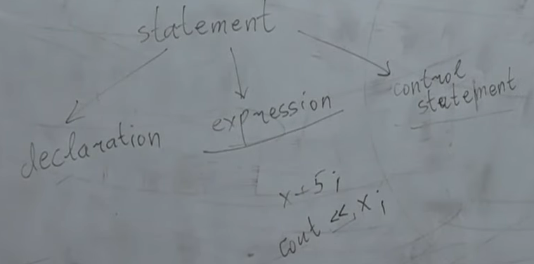
-
логические операторы
- ленивые вычисления
- branch prediction 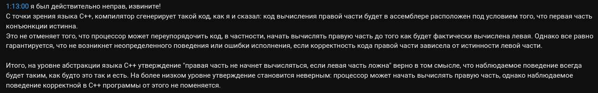
-
lvalue, rvalue
в самом простом приближении (на самом деле всё сложнее):
lvalue - ему можно что-то присвоить
rvalue - нельзя
Лекция 4
Выражения и операторы
- лево и право ассоциативные
- приоритет операторов
- order of evaluation
- sequenced before rules
Лекция 5
Ошибки
- compilation errors
- лексические ошибки
- синтаксические ошибки
- семантические ошибки
- runtime error
- undefined behaviour (большая беда языка)
- the as-if rule (компилятор имеет право как угодно менять действия нашей программы, только чтобы наблюдаемое поведение корректной программы оставалось таким же)
- warinings
Лекция 6
Указатели
*и&
int x = 10;
int* p = &x;
std::cout << *p;
void* vp = &x;
// (для приведения типов)
nullptr
NULL // in C
nullptr // in C++
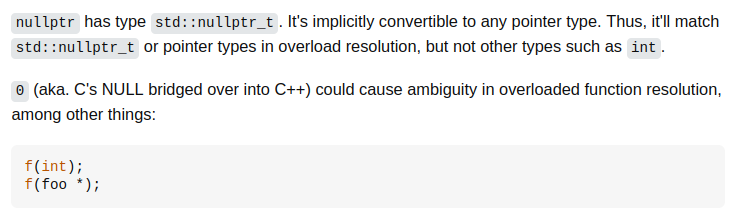
Лекция 7
Память
- статическая
- динамическая
- автоматическая
- стек: примерно 8мб
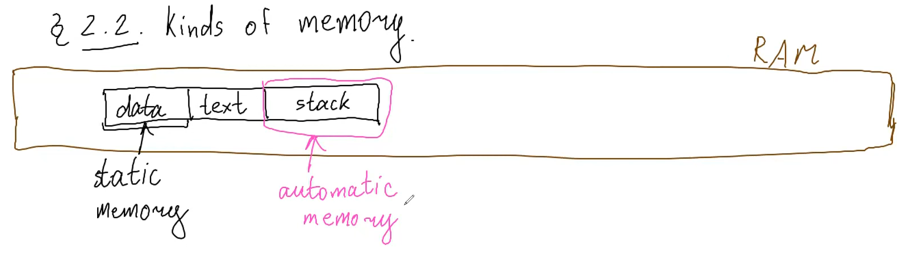
на самом деле вот так: 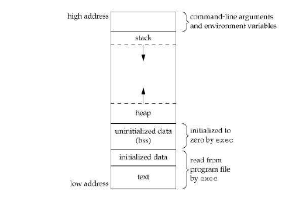
- static
проинициализируется, когда в 1 раз зайдем в функцию
void f() {
static int x = 0; // тоже в статической памяти
//...
}
- динамическая память
операторыnew,delete
int* p = new int;
delete p;
int* pa = new int[1000];
delete[] pa;
Лекция 8
Массивы
int a[10];
int b[3] = {1, 2, 3};
int c[] = {1, 2, 3}; // можно не указывать размер
int d[5] = {}; // заполнятся нулями
int* e[10]; // массив из 10 указателей на int
int (*f)[10]; // указатель на массив из 10 int
- указатели на функцию
function to pointer conversion
bool cmp(int x, int y) {
return x < y;
}
int main() {
// можно не писать &, можно просто указать название функции
bool (*p) (int, int) = &cmp;
std::cout << (void*)p;
}
как читать указатели? (начало лекции 9)
идем вправо, потом влево. затем поднимаемся на уровень выше. и повторяем
void (*pf)(int); // указатель на функцию, которая принимает int, а возвращает void
// 0) начинаем с названия, pf это:
// 1) -> пусто; <- указатель
// 2) ^
// 3) -> на фукнцию, которая принимает int; <- а возвращает void
если справа видим круглые скобки, то это функция
например, в шаге 3) (int)
void (*pfa[10])(int); // массив из 10 указателей на функцию, которая принимает int, а возвращает void
// 0) начинаем с названия, pfa это:
// 1) -> массив из 10; <- указателей
// 2) ^
// 3) -> на фукнцию, которая принимает int; <- а возвращает void
void (*(*pff[10])(int))(int); // массив из 10 указателей на функцию, которая принимает int, а возвращает указатель на другую функцию, которая принимает int, а возвращает void
// 0) начинаем с названия, pff это:
// 1) -> массив из 10; <- указателей
// 2) ^
// 3) -> на фукнцию, которая принимает int; <- а возвращает указатель
// 4) ^
// 5) -> на фукнцию, которая принимает int; <- а возвращает void
- аргументы по умолчанию
только последние
void point(int x = 3, int y = 4) {}
- variadic functions (легаси)
любое число аргументов
void simple_printf(const char* fmt...) {}
Лекция 9
Ссылки (references)
- амперсанд после типа
- можно считать, что это новое имя старого объекта
- на низком уровне реализуется через указатель, но не всегда
int x = 5;
int& y = x; // ссылка на x
int& t = y; // тоже ссылка на x, нет ссылки на ссылку
sizeof(y); // = sizeof(x)
&y; // = &x
int& r; // нельзя без инициализации
error: call of overloaded ‘f(int&)’ is ambiguous. не можем различить, вызываться от оригинального объекта, или от ссылки
void f(int& y) {
++y;
}
void f(int x) {
++x;
}
int main() {
int x = 5;
int& y = x;
f(y);
f(x);
}
- ссылку нельзя проинициализировать через rvalue
- формально говоря
++xвозвращаетint&, также и с разыменованием указателя*p(в си это не так, там нет такого понятия. но в плюсах можно думать об этом так) - lvalue to rvalue conversion
int& g(int& x) {/*...*/}
int main() {
int x = 10;
int t = g(x); // g(x) - lvalue, но используем как rvalue
}
-
нельзя путать (ну это skill issue)
и нельзя путать сint&&(rvalue-ссылка) -
dangling reference
возвращаем ссылку, но такого объекта уже нет
int& f(int& x) {
int y = ++x;
return y;
}
int main() {
int x = 0;
int& y = f(x); // UB
}
- static (аналогично глобальные переменные)
int& f() {
static int y = 0;
return y; // y существует всё время работы программы
}
int main() {
int& y = f(); // OK
}
- указатель (шок контент)
int& f() {
int* p = new int(1);
return *p;
}
int main() {
int& x = f();
delete &x; // OK
}
- можно:
- ссылка на указатель
- ссылка на массив
int a[10]; int (&b)[10] = a; // читается так же, как в прошлой лекции- ссылка на функцию
void f(int); void (&g)(int) = f; - нельзя:
- указатель на ссылку (нет такого типа. но можно создать указатель на исходный объект)
- массив ссылок
- вектор ссылок (т.к. там указатель на
T)
Лекция 10
Константы
- интуиция: другой тип, у которого отсутствует часть операций исходного типа (модифицирующих)
const int c = 2;
с = 2; // CE
int const a = 10; // можно писать const справа
- указатели
int x = 5;
int* p = &x;
const int* pc = p; // указатель на const int
int* const cp = p; // const указатель на int
const int* const cpc = p; // const указатель на const int
- неявное преобразование константности
int* -> const int*. в обратную сторону нельзя.
но это всего лишь запрет на некоторые операции, а не запрет, что объект не поменяется.
int x = 5;
const int* p = &x;
++x;
std::cout << *p; // увидим новое значение
- аналогично, ссылки
int x = 5;
const int& r = x; // новое название для x, с ограниченными правами
int& const rc = x; // CE. ссылка сама по себе не может быть переставлена на что-то другое, по этому не бывает константных ссылок
- константные ссылки (в смысле ссылка на const объект), (используются для передачи аргументов, если не собираемся менять объект).
!!! Lifetime expansion: обычные ссылки инициализировать через rvalue нельзя, а константные можно. Создаётся временный объект. Компилятор считает это имя оригинальным именем объекта. Когда эта ссылка выйдет из области видимости, тогда объект уничтожится.
void f(const std::string& s) {/*...*/}
int main() {
f("asdf"); // OK
const int& x = 5; // тоже OK
}
Лекция 11
Приведения типов
Стадии сборки
- препроцессинг
- директивы
#include,#define,#if,#pragma, ... .cpp -> .cpp, но без директив
- директивы
- комплиция
- получаем ассемблер код
.cpp -> .s
- ассемблирование
- получаем объектный файл с бинарным кодом
.s -> .o(или динамические.so,.dll)
- линковка
- собирает объектные файлы в исполняемый файл
- резолвим вызовы всех функций
.o -> executable
Лекция 12
ООП
- выравнивание полей
1-байтные переменные кладутся по адресам, кратным 1
2-байтные переменные кладутся по адресам, кратным 2
4-байтные переменные кладутся по адресам, кратным 4
8-байтные переменные кладутся по адресам, кратным 8
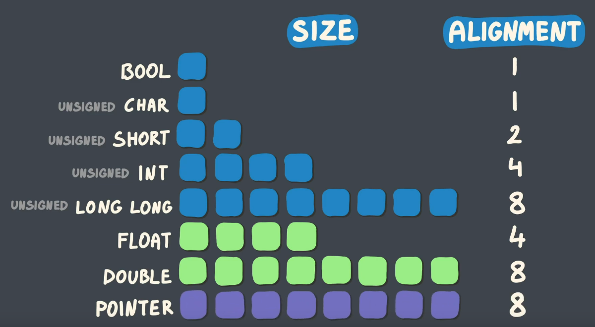
The alignment of the struct is the alignment of the most-aligned field in it
struct S {
int x = 1;
double d = 3.14;
};
// 16 байт (4 int, 4 padding, 8 double)
- гарантируется порядок полей в структуре
- аггрегатная инициализация
struct S {
int x = 1;
double d = 3.14;
};
int main() {
S s{2, 4.5};
}
можно с именами, но в таком же порядке!
struct xyz {
int a;
int b;
int c;
};
int main() {
xyz klm = { .a = 99, .c = 100 };
}
- методы
struct S {
void f(int x);
void g(int y) {
//...
}
};
void S::f(int x) {/*...*/} // qualified id
-
this - указатель на объект
->обращение к полю/методу по указателю -
inner class
struct A {
int x = 1;
double d = 3.14;
struct AA {
char c;
};
};
int main() {
A::AA a;
}
struct A {
int x = 1;
double d = 3.14;
struct AA { // можно даже без названия - анонимная структура
char c;
} a;
};
int main() {
A::AA a;
}
- local class
int main() {
struct S {
int x = 1;
int y = 2;
};
S s;
}
Модификаторы доступа
- классы и структуры
в плюсах почти нет разницы. в структуре по умолчанию всё публичное, в классе приватное
class C {
int x;
};
int main() {
C c;
c.x; // CE
}
- public, private
к private можем обращаться только внутри методов - protected обсудим позже
- !! приватность проверяется после перегрузки
Лекция 13
Друзья
- функции или классы, которые не являются членами нашего класса, но им разрешен доступ к приватной части
объявляем через friend в любом месте внутри класса (определить можно и внутри, и снаружи)
class C {
private:
int x{5};
friend void g(C, int);
friend class CC; // все методы этого класса будут друзьями
};
void g(C c, int y) {
std::cout << c.x + y << "\n";
}
Конструкторы
class Complex {
double re = 0.0;
double im = 0.0;
public:
Complex (double real) {
re = real;
}
};
int main() {
// здесь 4 раза вызывается одинаковый конструктор
Complex c(5.0);
Complex c2 = 6.0;
// если есть хоть 1 конструктор, то аггрегатная инициализация перестаёт работать
Complex c3{7.0};
Complex c4 = {8.0};
}
- uniform initialization
struct Coord { int x, y; };
struct BadGrid { BadGrid(int width, int height); };
struct GoodGrid { explicit GoodGrid(int width, int height); };
- member initializer list
class Complex {
double re = 0.0;
double im = 0.0;
public:
// re не проинициализируется 0 по умолчанию
// это выполнится перед конструктором
Complex (double re) : re(re) {}
Complex (double re, double im) : re(re), im(im) {} // желательно писать в таком же порядке
};
- std::initializer_list (C++11)
class String {
char* arr = nullptr;
size_t sz = 0;
size_t cap = 0;
public:
String() {} // default constructor
String(size_t n, char c) : arr(new char[n+1]), sz(n), cap(n+1) {
std::fill(arr, arr+n, c);
arr[sz] = '\0';
}
String(std::initializer_list<char> list)
: arr(new char[list.size()])
, sz(list.size())
, cap(sz+1)
{
std::copy(list.begin(), list.end(), arr);
arr[sz] = '\0';
}
};
int main() {
String s; // default initialization
String s2 = {'a', 'b', 'c'};
String s3 = {2, 'b'}; // тоже вызовется от std::initializer_list
// !! но если бы его не было, вызвался бы String(size_t n, char c)
}
- если не объявили конструкторы, то компилятор сгенерирует сам конструктор по умолчанию (он будет просто инциализировать поля по умолчанию). Если объявили хоть один конструктор, то комплиятор не будет этого делать. Но можно попросить (C++11)
class String {
char* arr = nullptr;
size_t sz = 0;
size_t cap = 0;
public:
String() = default; // explicitly declared, implicitly defined
String(size_t n, char c) : arr(new char[n+1]), sz(n), cap(n+1) {
memset(arr, c, n);
// std::fill(arr, arr+n, c);
arr[sz] = '\0';
}
};
- или можно запретить генерировать (C++11)
class C {
//...
C() = delete;
};
- но не всегда может сгенерироваться конструктор по умолчанию
class C {
// не знаем как проинициализировать по умолчанию
int& r;
const int c;
};
Деструкторы
- вызываются в обратном порядке констуркторам (как стек). Сначала выполняется код деструктора нашего класса, а потом его полей.
~String() {
delete[] arr;
}
Конструктор копирования
- генерируется по умолчанию (просто копирует поля). Причем даже если есть и другие конструкторы
- константная ссылка, хотя можно и без const
- так же лучше делать с member initializer list
String(const String& other)
: arr(new char[other.cap])
, sz(other.sz)
, cap(other.cap)
{
memcpy(arr, other.arr, sz+1);
}
int main() {
String s(2, 'a');
String s2 = s; // конструктор копирования
String s3 = s3; // UB
}
Делегирующие конструкторы (C++11)
- вызываем только 1 конструктор и нельзя использовать member initializer list
class String {
char* arr = nullptr;
size_t sz = 0;
size_t cap = 0;
String(size_t n, char c) : arr(new char[n+1]), sz(n), cap(n+1) {
arr[sz] = '\0';
}
public:
String() = default;
String(size_t n, char c) : String(n) {
memset(arr, c, n);
}
String(std::initializer_list<char> list) : String(list.size()) {
std::copy(list.begin(), list.end(), arr);
}
String(const String& other) : String(other.sz) {
memcpy(arr, other.arr, sz+1);
}
};
Оператор присваивания
String& operator=(const String& other) {
if (this == other) { // в таком случае обязательно надо проверять!
return *this;
}
delete[] arr;
sz = other.sz;
cap = other.cap;
arr = new char[other.cap];
memcpy(arr, other.arr, sz+1);
return *this;
}
- тоже можно попросить сгенерировать (но тоже не всегда получится)
- идиома copy and swap
void swap(String &other) {
std::swap(arr, other.arr);
std::swap(sz, other.sz);
std::swap(cap, other.cap);
}
String& operator=(const String& other) {
String copy = other; // конструктор копирования
swap(copy);
return *this;
}
еще проще можно сделать так
String& operator=(String other) { // конструктор копирования при вызове
swap(other);
return *this;
}
в таких случаях можно не делать проверку на присваивание самому себе
Правило трех
Реккомендация по написанию классов: Если в классе есть нетривиальный конструктор копирования, или нетривиальный оператор присваивания, или нетривиальный деструктор, то нужно чтобы все 3 они были нами написаны.
Лекция 15
Const, mutable
- отсутствуют методы, которые явно не помечены, что должны присустствовать у константных объектов
struct S {
void f() {
std::cout << "Hi!";
}
};
int main() {
const S s;
s.f(); // CE
}
struct S {
void f() const {
std::cout << "Hi!";
}
};
int main() {
const S s;
s.f(); // OK
}
вывод: все методы, которые, предполагается, что будут вызваны у константных объектов, надо помечать const
-
не имеет никакого отношения к конструкторам и деструкторам
-
в const методах нельзя вызывать неконстантные операции у полей
struct S {
int x = 0;
void f() const {
++x; // CE
std::cout << "Hi!";
}
};
- перегрузка
struct S {
void f() const {
std::cout << 1;
}
void f() {
std::cout << 2;
}
};
- компилятор неявно навешивает const на все поля. Если это указатель, то он неявно превращается в const указатель (но не указатель на const!), то есть как будто появляется const справа. Однако на ссылку нельзя навесить const справа (подразумевается, что неизменными должны быть сами байты, которые кодируют ссылку, но не объект, на который она указывает). Поэтому для ссылок нет разницы между константным методом и обычным
int x = 0;
struct S {
int& r = x;
void f(int y) const {
r = y; // OK
}
};
поэтому вот такой прикол
struct S {
int x = 1;
int& r = x;
void f(int y) const {
r = y; // поменяет x в const методе
}
};
- mutable (противоядие от const)
struct S {
mutable int x = 1;
void f(int y) const {
x = y;
}
};
Static
struct S {
static void f() {
std::cout << "Hi!";
}
};
int main() {
S::f();
}
- нельзя внутри класса инициализировать неконстантные статические члены, но const можно
struct S {
static int x = 10; // CE
const static int y = 5; // OK
};
int S::x = 1; // OK
- singleton
struct Singleton {
private:
Singleton() {}
static Singleton* ptr;
Singleton(const Singleton&) = delete;
Signleton& operator=(const Singleton&) = delete;
public:
static Singleton& getObject() {
if (ptr == nullptr) {
ptr = new Singleton();
}
return *ptr;
}
// добавить деструктор
};
Singleton* Singleton::ptr = nullptr;
int main() {
Singleton& s = Singleton::getObject();
}
Приведение типов
- explicit запрещает неявную конверсию
по кодстайлу рекомендуется делать так для конструкторов одного аргумента
struct Latitude {
double value;
explicit Latitude(double value) : value(value) {}
};
также с aggregate initialization
struct BadGrid {
BadGrid(int width, int height);
};
struct GoodGrid {
explicit GoodGrid(int width, int height);
};
int main() {
BadGrid g1 = {10, 20}; // OK
GoodGrid g2 = {10, 20}; // CE
}
- приведение типа к чему-то
struct Latitude {
double value;
explicit Latitude(double value) : value(value) {}
operator double() const { // к double
return value;
}
};
- но можно запретить неявную. Остается только явная (static_cast)
struct Latitude {
double value;
explicit Latitude(double value) : value(value) {}
explicit operator double() const { // запретили неявную
return value;
}
};
Литеральные суффиксы
- их можно определять)
"sdfsadf"s // это std::string
Лекция 16
Перегрузка операторов
struct Complex {
double re = 0.0;
double im = 0.0;
Complex(double re) : re(re) {}
Complex(double re, double im) : re(re), im(im) {}
Complex operator+(const Complex& other) const { // чтобы могли вызываться от const объектов
return Complex(re + other.re, im + other.im);
}
// если определить внтури класса, то оператор не симметричный. запрещаем левому агрументу быть не объектом класса
};
int main() {
Complex c(1.0);
c + 3.14; // OK
3.14 + c; // CE
}
struct Complex {
double re = 0.0;
double im = 0.0;
Complex(double re) : re(re) {}
Complex(double re, double im) : re(re), im(im) {}
};
// здесь уже без const
Complex operator+(const Complex& a, const Complex& b) {
return Complex(a.re + b.re, a.im + b.im);
}
int main() {
Complex c(1.0);
c + 3.14; // OK
3.14 + c; // OK
}
- плохая реализация
struct Complex {
double re = 0.0;
double im = 0.0;
Complex(double re) : re(re) {}
Complex(double re, double im) : re(re), im(im) {}
// очень медленно на больших объектах
Complex& operator+=(const Complex &other) {
// 1) новый объект *this + other
// 2) operator=
*this = *this + other;
return *this;
}
};
Complex operator+(const Complex& a, const Complex& b) {
return Complex(a.re + b.re, a.im + b.im);
}
надо + выражать через +=
struct Complex {
double re = 0.0;
double im = 0.0;
Complex(double re) : re(re) {}
Complex(double re, double im) : re(re), im(im) {}
Complex& operator+=(const Complex &other) {
re += other.re;
im += other.im;
return *this;
}
};
Complex operator+(const Complex& a, const Complex& b) {
Complex result = a;
result += b;
return result;
}
int main() {
Complex a(1.0);
Complex b(2.0);
Complex c(3.0);
// так как мы явно не запретили присваиваивание для rvalue
a + b = c; // OK
}
надо фиксить так (C++11)
// применим только к lvalue
Complex& operator=(const Complex &other) & {/**/}
// применим только к rvalue
Complex& operator=(const Complex &other) && {/**/}
- опять про копирования
если возвращаем локальную переменную по значению наружу - RVO
Complex operator+(const Complex& a, const Complex& b) {
Complex result = a; // 1) копирование
result += b; // 2) в зависимости от объекта
return result; // 3) RVO - нет копирования
}
// так не сработает, не локальная переменная
Complex operator+(Complex a, const Complex& b) {
return a += b;
}
- потоки вывода
std::ostream& operator<<(std::ostream& out, const std::string& str) {/**/}
std::istream& operator>>(std::istream& in, std::string& str) {/**/}
- операторы сравнения
bool operator<(const Complex& a, const Complex& b) {
return a.re < b.re || a.re == b.re && a.im < b.im;
}
a > b == b < a
a <= b == !(a > b)
a >= b == !(a < b)
a == b == !(a < b) && !(b < a)
a != b == a < b || b < a
// но лучше равенство определить руками
- operator spaceship (Three-way comparison) (C++20)
partial_ordering (<, >, =, не сравним)
weak_ordering (<, >, =)
strong_ordering (<, >, =) и ещеa == b => f(a) == f(b)
struct Complex {
double re = 0.0;
double im = 0.0;
Complex(double re) : re(re) {}
Complex(double re, double im) : re(re), im(im) {}
// по умолчанию - лексикографически
std::weak_ordering operator<=>(const Complex& other) const = default;
};
struct Complex {
double re = 0.0;
double im = 0.0;
Complex(double re) : re(re) {}
Complex(double re, double im) : re(re), im(im) {}
std::weak_ordering operator<=>(const Complex& other) const {
return std::weak_ordering::equivalent;
}
// operator== не доопределяется
};
- инкремент, декремент
struct UserID {
int value = 0;
UserID& operator++() {
++value;
return *this;
}
UserID operator++(int) {
UserID copy = *this;
++value;
return copy;
}
}
- operator()
// функтор
struct Greater {
bool operator() (int x, int y) {
return x > y;
}
}
int main() {
std::vector<int> v(10);
std::sort(v.begin(), v.end(), Greater());
}
Лекция 17
Указатель на члены класса
struct S {
int x;
double y;
void f(int z) {
std::cout << x + z;
}
};
int main() {
int S::* p = &S::x; // указатель на поле класса
S s{1, 3.14};
S* ps = &s;
std::cout << s.*p; // достанет int из объекта
std::cout << ps->*p; // то же самое, но по указателю
void (S::* pf)(int) = &S::f; // указатель на метод класса
(s.*pf)(3);
(s->*pf)(5);
}
Enums and enum classes
- enum
enum E {
White,
Gray,
Black
};
int main() {
E e = White;
int e1 = White; // OK
std::cout << e; // OK
}
- enum class (C++11)
enum class E {
White,
Gray,
Black
};
int main() {
E e = E::White;
int e1 = E::White; // CE
std::cout << e; // CE
// можно делать static_cast
}
- можно задать значения
enum class E {
White = 2,
Gray = 9,
Black= 6
};
- наследования
enum class E : int8_t {
White = 2,
Gray = 9,
Black= 6
};
Наследования
- public, private, protected
protected член класса доступен всем другим членам класса, друзьям и всем наследникам
struct Base {
protected:
int x;
public:
void f() {}
};
struct Derived : Base {
int y;
void g() {
std::cout << x;
}
}
int main() {
Derived d;
std::cout << d.x; // CE
}
- можно добавить модицикатор доступа при самом наследовании
у классов по умолчанию родитель private, у структур public
struct Derived : public Base {
int y;
void g() {
std::cout << x;
}
}
int main() {
Derived d;
std::cout << d.x; // CE
}
чтобы обратиться к полю, надо пройти через 2 двери. Надо и чтобы Derived не запрещал доступ к Base, и чтобы Base не запрещал доступ к своим полям.
- protected
struct Granny {
int x;
void f() {}
};
struct Mom : protected Granny {
int y;
void g() {}
};
struct Son : Mom {
int z;
void h() {
std::cout << x; // OK
}
};
int main() {
Son s;
s.z; // OK
s.y(); // OK
s.x; // CE
}
- видимость и доступность полей и методов
частное предпочтительнее общего
struct Base {
void f() {
std::cout << 1;
}
};
struct Derived : Base {
void f() {
std::cout << 2;
}
};
int main() {
Derived d;
d.f(); // 2
}
Это не перегрузка функций. f() затмевает родительскую функцию. Функция из Base даже не рассматривается
struct Base {
void f(int) {
std::cout << 1;
}
};
struct Derived : Base {
void f(double) {
std::cout << 2;
}
};
int main() {
Derived d;
d.f(0); // 2
// но можно вызвать явно
d.Base::f(0); // 1
}
тут было еще много разных душных кейсов, которые я не захотел записывать
Лекция 18
Размещение объектов в памяти
struct Base {
int x;
};
struct Derived : Base {
double y;
};
int main() {
std::cout << sizeof(Derived); // 16
// 4 (int) + 4 (padding) + 8 (double)
}
- EBO (Empty Base Optimization)
struct Base {
void f() {}
};
struct Derived : Base {
double y;
void g() {}
};
int main() {
std::cout << sizeof(Base); // 1
std::cout << sizeof(Derived); // 8
}
Конструкторы, деструкторы при наследовании
Сначала создаётся объект родителя (инциализация полей + конструтор), только потом объект наследника (инициализация полей + конструктор)
struct Base {
int x;
Base(int x) : x(x) {}
};
struct Derived : Base {
int y;
Derived(int y) : y(y) {}
};
int main() {
Derived d = 3.14; // CE
// нет нужного конструктора для Base
}
- явный вызов родительского конструктора
struct Base {
int x;
Base(int x) : x(x) {}
};
struct Derived : Base {
int y;
Derived(int y) : Base(0), y(y) {}
};
int main() {
Derived d = 3.14; // OK
}
- наследование конструкторов (C++11)
struct Base {
int x;
Base(int x) : x(x) {}
};
struct Derived : Base {
int y = 0;
using Base::Base; // унаследовали конструктор из Base
};
конструкторы копирования и перемещения не наследуется
Приведение типов при наследовании
основная идея наследования
struct Base {
int x;
};
struct Derived : Base {
int y;
}
void f(Base& b) { // смотрим на Derived, как будто он Base
cout << b.x;
}
int main() {
Derived d;
f(d);
}
аналогично для указателей
void f(Base* b) {
cout << b->x;
}
int main() {
Derived d;
f(&d);
}
можно и по значению
// slicing (срезка при копировании)
// в новый объект явно скопируется та часть Base, которая внутри Derived
// вызовется нетривиальный конструктор копирования, если он есть
void f(Base b) {
cout << b.x;
}
int main() {
Derived d;
f(d);
}
Лекция 19
Приведение типов при наследовании
- публичное наследование 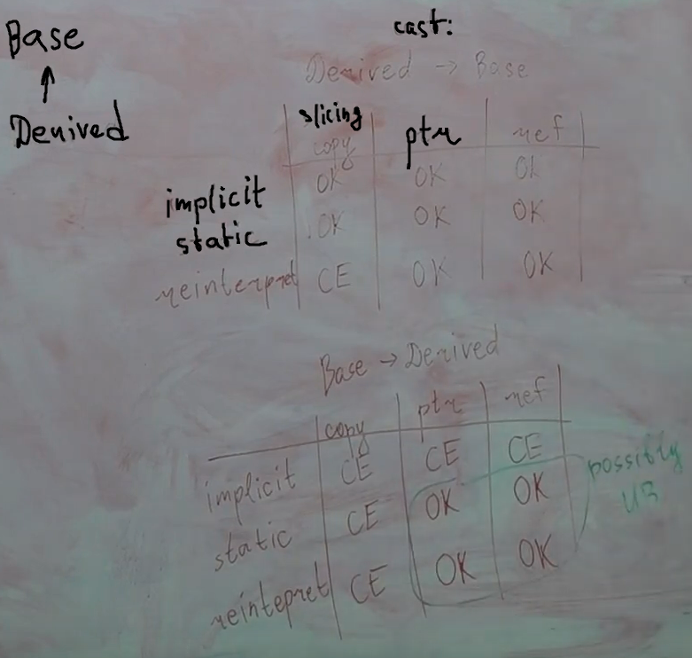 possibly UB - при попытке обращения к полям и методам Derived будет UB
- приватное наследование
если мы не член класса и не друг, нам недоступен тот факт, что Derived это на самом деле Base 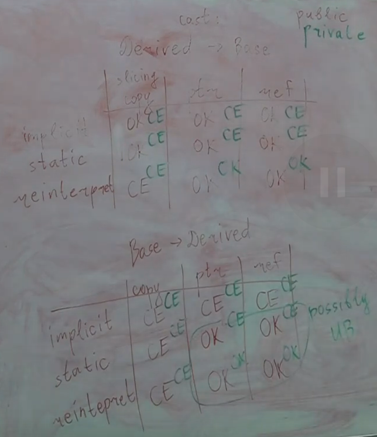
Множественное наследование
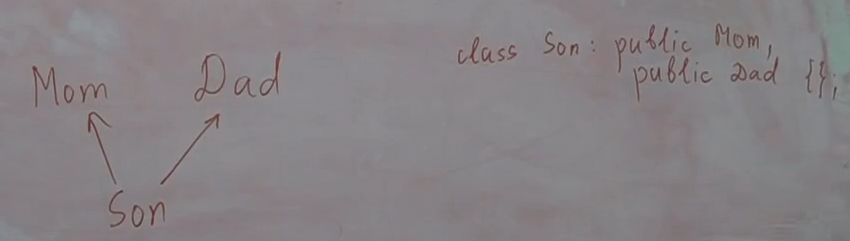
- как располагается в памяти 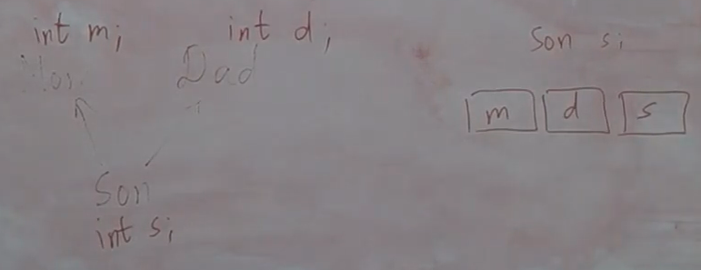
- как должен работать каст
сын - частный случай папы. Но адрес папы не такой, как адрес сына. Подобъект папы начинается с адреса на 4 большего, чем сам исходный объект. 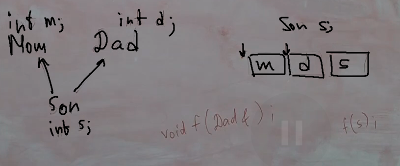 по этому неявный каст должен сдвинуть адрес. Пример неявного каста одного указателя к другому, при котором численное значение адреса меняется 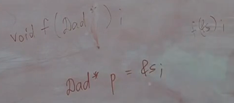 - если поля или методы называются одинаково
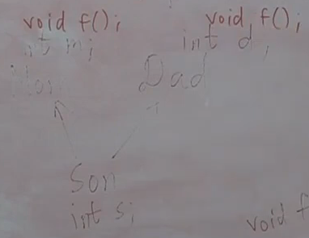
Если в сыне объявили метод f, то дальше поиск не пойдет, он затмевает родительские - уже разбирали. Но если в сыне не будет метода f, то CE. Причем если просто унаследовали 2 одинаковых метода, то ничего не будет. Но если собираемся вызвать - уже CE.
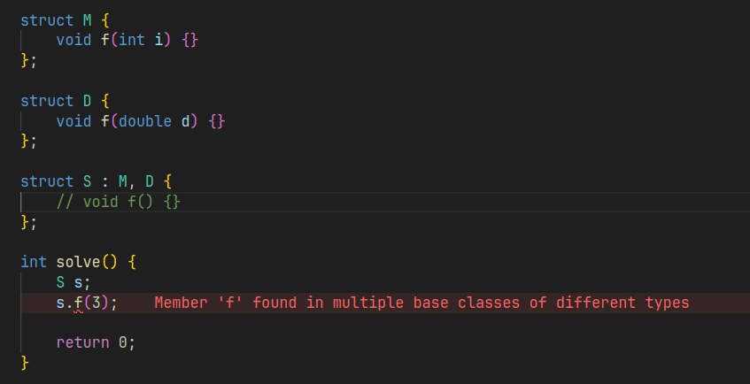 Тут Мещерин сказал, что будет перегрузка. Но её нет! Но можно явно вызвать нужный метод
s.M::f(5);
s.D::f(3.14);
Diamond problem
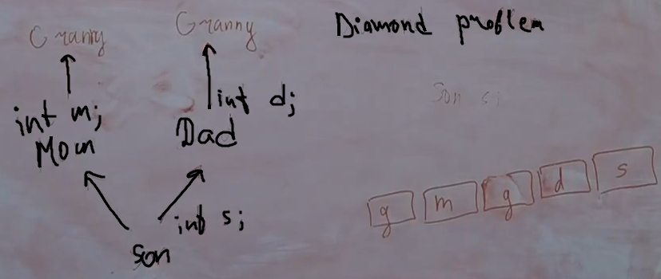
Son s;
s.g; // CE - неоднозначность
s.Granny::g; // CE - неоднозначность
s.Mom::g; // OK
Granny& g = s; // CE - неоднозначный каст
// нужно скастится к маме/папе, потом уже к бабушке
// если в бабушке метод void f()
s.f(); // CE
-
касты между родителями одного уровня 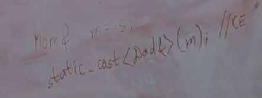
так как не понятно, как сдвинуть адрес. В зависимости от того, как перечислены наследуемые классы, надо делать либо сдвиг вправо, либо сдвиг влево -
inaccessible base class
к полям правой бабушки никак нельзя обратиться. Так не надо никогда делать
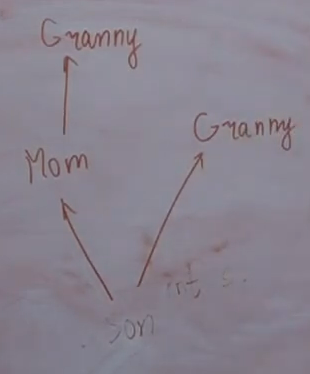 -
указатели на методы 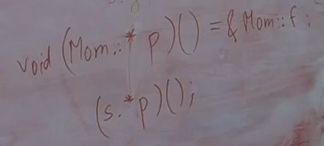
но в чем тут проблема? 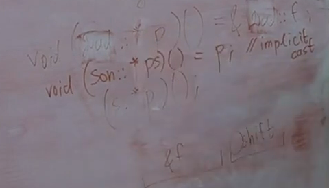 указатель на метод хранит не только указатель на функцию, но и сдвиг объекта (на сколько байт начало того объекта, чей это метод, сдвинуто относительно начала того объекта, от которого мы вызвались)
Виртуальное наследование
Хотим, чтобы если мы 2 раза унаследуемся от одного и того же прородитель с разными промежуточными родителями, то этот прородитель не дублировался
-
virtual 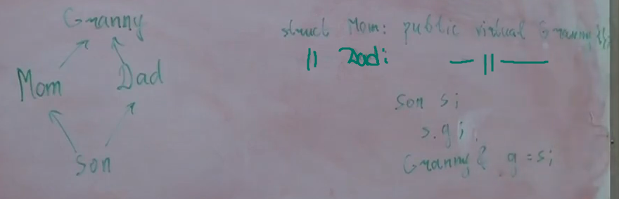
-
как это работает 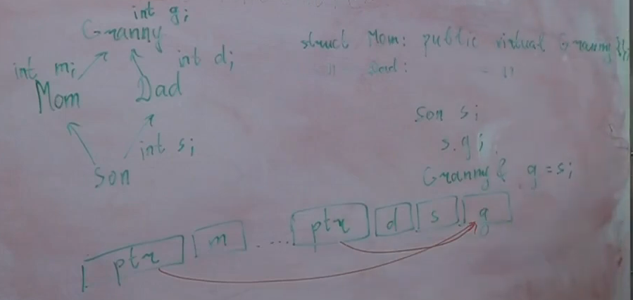 ptr создается для тех классов, у которых есть виртуальный предок. ptr на самом деле указывает не сюда. для каждого из типов в статической памяти будет создана некоторая структура данных, в которой будет для каждого виртуального предка будет статически указан сдвиг относительно начала объекта это предка - vtable 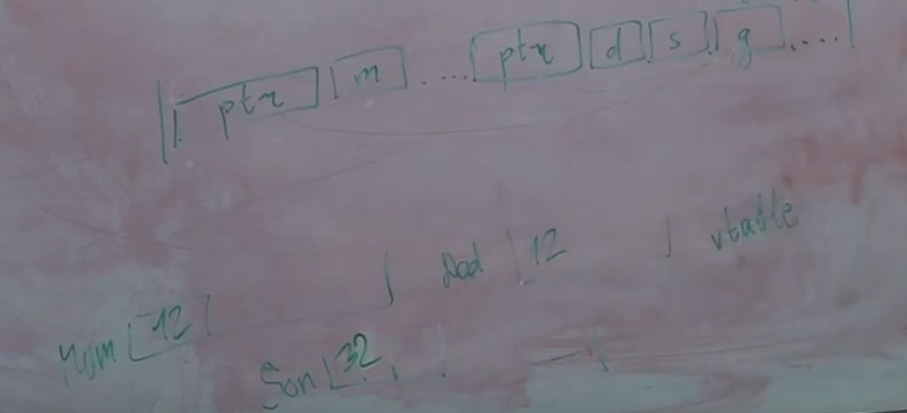
-
при виртуальном наследовании static_cast вниз не работает
не понятно, насколько сдвигаться - CE 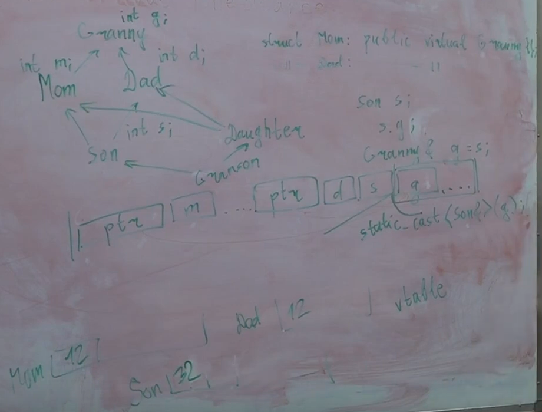 -
на самом деле таблица не одна на класс
чтобы уметь кастоваться от папы к бабушке, надо знать не только оффсет бабушки относительно сына, но и оффсет нашего текущего объекта от реального начала объекта - top offset (так как папа лежит не первый, ему надо прыгнуть на 32 - его оффсет) в маме top offset 0, в папе 16 -
можно унаследовать класс один раз виртуально, другой раз не виртуально
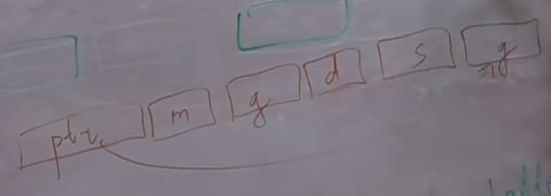 дальше опять куча примеров про какой-то бред
Лекция 20
Виртуальные функции
struct Base {
void f() {
std::cout << 1;
}
};
struct Derived : Base {
void f() {
std::cout << 2;
}
};
int main() {
Derived d;
Base& b = d;
b.f(); // 1
}
но хотим, чтобы выполнялся частный случай
struct Base {
virtual void f() {
std::cout << 1;
}
};
struct Derived : Base {
// можно так, но не обязательно
// virtual void f() {
void f() {
std::cout << 2;
}
};
int main() {
Derived d;
Base& b = d;
b.f(); // 2
}
решение, какую функцию вызвать принимается в runtime
но вот так будет настоящая копия
int main() {
Derived d;
Base b = d;
b.f(); // 1
}
-
полиморфный тип - у которого хотя бы 1 виртуальная функция (или хотя бы одна виртуальная функция унаследована)
-
деструктор
struct Base {
virtual void f() {
std::cout << 1;
}
};
struct Derived : Base {
int* p = new int(0);
void f() {
std::cout << 2;
}
~Derived(){
delete p;
}
};
int main() {
Base* b = new Derived();
delete b; // деструктор Base -> утечка памяти
}
вывод: деструктор нужно делать виртуальным
struct Base {
virtual void f() {
std::cout << 1;
}
virtual ~Base() = default;
};
или без default, но тогда не сможем работать с объектом Base
- сигнатура должна совпадать полностью
struct Base {
void f() const {
std::cout << 1;
}
};
struct Derived : Base {
void f() {
std::cout << 3;
}
};
int main() {
Derived d;
Base& b = d;
b.f(); // 1
}
так же с возвращаемым типом
- override может нас спасти (CE, если такой виртуальной функции нет у родителя) (C++11)
!никак не влияет на поведение работы с виртуальными фукнциями, просто добавляет CE, если такой функции нет - подсказка для нас самих
struct Derived : Base {
void f() override {
std::cout << 3;
}
};
- final - запрещает всем дальнейшим наследникам переопределять функцию (с такой же сигнатурой) (C++11)
struct Derived : Base {
void f() final {
std::cout << 3;
}
};
final автоматически означает override. поэтому из слов virtual, override, final всегда требуется только одно
- другой смысл для классов
struct Derived final : Base {};
от Derived больше нельзя наследоваться
- private
struct Granny {
virtual void f() const {
std::cout << 1;
}
};
struct Mom : Granny {
private:
void f() const override {
std::cout << 2;
}
};
struct Son : Mom {
void f() const final {
std::cout << 3;
}
};
int main() {
Mom m;
Granny& g = m;
g.f(); // 2
}
виртуальные функции это runtime явления, а приватность - compile time. в compile time никак нельзя определить, какая функция будет выбрала в runtime.
но!
struct Granny {
private:
virtual void f() const {
std::cout << 1;
}
};
struct Mom : Granny {
void f() const override {
std::cout << 2;
}
};
struct Son : Mom {
void f() const final {
std::cout << 3;
}
};
int main() {
Mom m;
Granny& g = m;
g.f(); // CE
}
берем имя f() из бабушки, но оно приватно => CE
- абстрактный класс - есть хотя бы 1 pure virtual функция
аналог интерфейса
struct Shape {
virtual double area() const = 0; // pure virtual
virtual ~Shape() = default;
};
нельзя создать объект абстрактного типа, но можно создавать ссылки и указатели такого типа на потомков
- но можно всё таки определить pure virtual функцию
struct Shape {
virtual double area() const = 0;
virtual ~Shape() = default;
};
double Shape::area() {
return 0.0;
}
struct Shape {
virtual double area() const = 0;
virtual ~Shape() = default;
};
struct Square : Shape {
double a;
Square(double a) : a(a) {}
double area() const override {
return a * a;
}
};
struct Circle : Shape {
double r;
Circle(double r): r(r) {}
double area() const override {
return 3.14159265358 * r * r;
}
};
int main() {
std::vector<Shape*> v;
v.push_back(new Square(1.0));
v.push_back(new Circle(1.0));
for (Shape* s : v) {
std::cout << s->area() << "\n";
}
for (Shape* s : v) {
delete s;
}
}
- можно явно попросить вызвать родиельскую
int main() {
Circle c(1.0);
c.Shape::area();
}
Лекция 21
dynamic_cast
- dynamic_cast (runtime cast) - только для для полиморфных типов (исходный тип должен быть полиморфным)
struct Base {
virtual void f() {}
virtual ~Base() = default;
};
struct Derived : Base {
void f() override {}
};
int main() {
Derived d;
Base& b = d;
dynamic_cast<Derived&>(b);
}
проверит, на самом ли деле под b лежит Derived&. иначе кинет std::bad_cast
dynamic_cast<Derived*>(&b);
аналогично проверит, но вернет nullptr
довольная дорогая операция
-
можно делать каст от любого полиморфного типа к void*
-
умеет кастовать вбок (от мамы к папе) (исходный тип должен быть полиморфным)
-
можно делать dynamic_cast вверх, даже если тип не полиморфный (как и static_cast)
-
можно делать dynamic_cast вниз при виртуальном наследовании от полиморфного типа
RTTI
-
в каждом объекте полиморфного типа хранится runtime type information
-
оператор typeid
возвращает std::type_info
std::cout << typeid(b).name(); // название типа, который реально был под ссылкой
// const char*
работает и не для полиморфных типов
type_info можно сравнивать
Расположение в памяти полиморфных объектов
формально не является стандартом C++
-
vtable 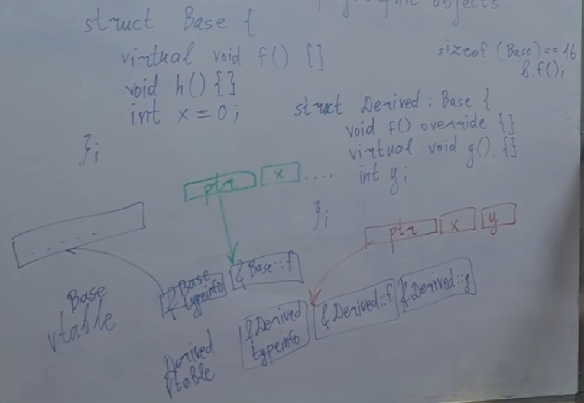
-
наследования 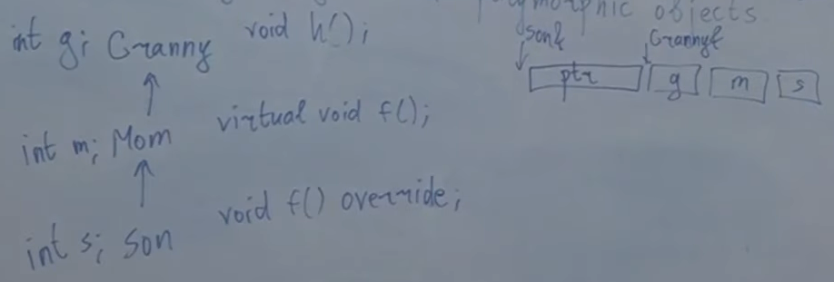 каст от сына к бабушке должен сместить указатель (причем это умеет даже static_cast)
обратно сделать dynamic_cast уже не получится, т.к. бабушка не полиморфна (но static_cast можно в обе стороны!)
Лекция 22
Множественное наследование
-
обычное наследование 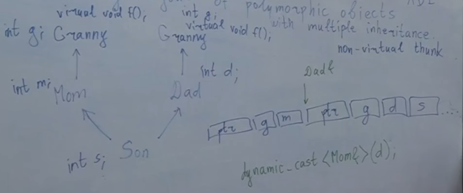 первый ptr общий для мамы и сына, второй для папы (они ведут в разные таблицы) 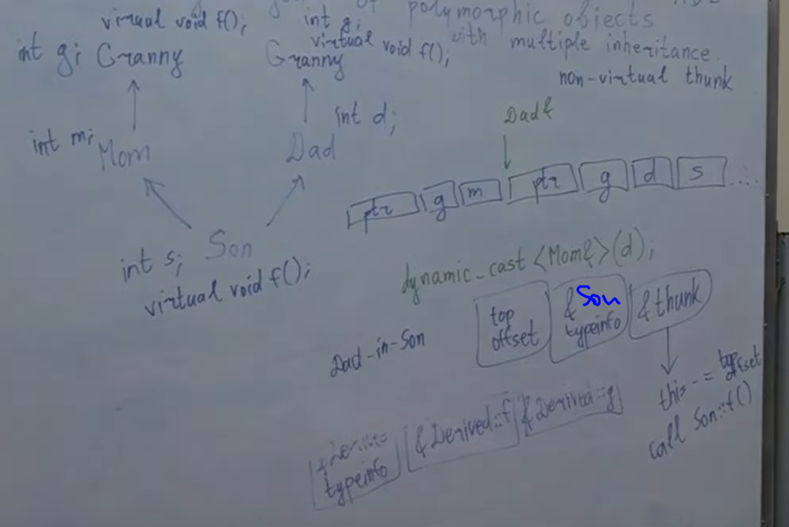 если вызываем f() из папы, но сам объект - сын, надо вычесть top offset, чтобы могли работать с полями сына
-
виртуальное наследование 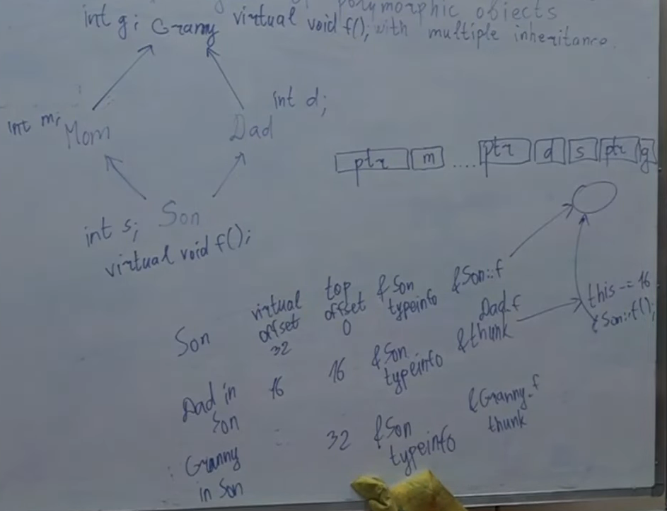 virtual offset - оффсет виртуального родителя от начала
top offset - оффсет нашего объекта от реального начала
Проблемы с виртуальными функциями
-
нельзя не определить виртуальную функцию (кроме pure virtual), так как компилятор должен сгенерировать vtable c указателем на функцию, а линкер не сможет ее найти
-
из конструктора вызывается не виртуальная функция, а обычная
мне лень писать все примеры, потому что это полный бред. можно почитать по ссылке выше
Некоторые статьи
Multiple Inheritance Considered Useful - статья про множественное наследование и виртуальные функции (в 7 страницах ☠️)
Shahar Mike's Web Spot - блог какого-то крутого чувака, где есть подробные статьи про vtables с разбором, как они работают и располагаются в памяти
Лекция 23
Шаблоны
- шаблоны функций
template <typename T>
void swap(T& x, T& y) {
T t = x;
x = y;
y = t;
}
template <typename T>
T max(T x, T y) {
return x > y ? x : y;
}
// это, конечно, плохие реализации
можно писать
template <class T> // old style
разницы нет, кроме очень редких случаев (не будем разбирать)
- шаблоны классов
template <typename T>
class vector {
T* arr;
size_t sz;
size_t cap;
};
- шаблоны using (C++11)
template <typename T>
using mymap = std::map<T, T, std::greater<T>>;
-
шаблоны переменных (constexpr) (C++14) - разберём позже
-
концепты (C++20) - разберём позже
-
выведение шаблонного параметра (Template argument deduction)
int a = 0;
int b = 1;
swap(a, b); // можно не указывать явно
но вот так CE
int a = 0;
long long b = 1;
swap(a, b); // не понятно, какой T имеется в виду
- кодогенерация - главная идея шаблонов!
глядя на то, от каких T мы вызываемся, компилятор должен понять, какой код сгенерировать
int a1 = 0, b1 = 1;
swap(a1, b1);
long long a2 = 0, b2 = 1;
swap(a2, b2);
swap(a1, a2); // CE
стадия генерации должна пройти целиком до того, как начнется стадия выбора версий !!! (дальше будет поправка)
но можно указать явно, какую версию использовать (без deduction)
swap<long long>(a1, b1); // CE
теперь будет CE, из-за того, что нельзя проинициализировать неконстантную ссылку на long long через int, но если принимать по значению - OK (сделается каст от int к long long)
- с классами аналогично
std::vector<int> v;
std::vector<double> v; // сгенерирует 2 абсолютно разных класса
v2 = v; // CE, нет конверсии от одного к другому
// т.к. это 2 абсолютно разных класса
Перегрузка шаблонных функций
- частное лучше общего
template <typename T>
void f(T x) {}
void f(int x) {} // идеальное соответствие типа
int main() {
int x = 0;
f(x); // OK, выберется 2 версия
}
(поправка к теме кодогенерации)
на самом деле, если есть выбор между шаблонной версией и не шаблонной, то это решение принимается раньше - до того, как компилятор начинет генерировать шаблонную версию. в примере выше шаблонная версия не сгенерируется. (на самом деле это тоже не совсем правда, дальше будет 2 поправка)
!но, если частная версия не так хорошо подходит, как общая, то выберется общая
template <typename T>
void f(T x) {}
void f(long long x) {}
int main() {
int x = 0;
f(x); // сгенерируется шаблонная для int
}
итого есть 2 правила:
- частное лучше общего
- не смотря на это, точное соответствие лучше чем хоть какой-то каст
но, опять же, можно указать явно
template <typename T>
void f(T x) {
std::cout << 1;
}
void f(int x) {
std::cout << 2;
}
int main() {
int x = 0;
f<long long>(x); // 1
f<int>(x); // 1, обязываем компилятор выбрать именно шаблонную версию
}
здесь нет deduction, поэтому всё проще
- шаблонные аргументы по умолчанию
они должны быть последними, как и обычные аргументы у функций
template <typename T = int>
void f(T x) {}
template <typename T, typename U = int>
U f(T x) {
return 0;
}
тогда при вызове можно указывать не все типы
- ссылки
смысл ссылок в том, чтобы они были неотличимы от исходной переменной
template <typename T = int>
void f(T& x) {
std::cout << 1;
}
template <typename T = int>
void f(T x) {
std::cout << 2;
}
int main() {
int x = 0;
f(x); // CE
}
здесь CE будет и без шаблонов
но
f(1); // 2
Cпециализации шаблонов
- классы
template <typename T>
class vector {
T* arr;
size_t sz;
size_t cap;
};
// full specialization
template <>
class vector<bool> {
char* arr;
size_t sz;
size_t cap;
};
в шаблонном префиксе указываем те аргументы, которые пригодятся для объяснения, какую именно специализацию хотим объявить (template <> - ничего не нужно для этой специализации), а дальше указываем саму специализацию справа от названия класса
template <typename T, typename U>
class S {};
// partial specialization
template <typename T>
class S<T, T> {};
template <typename T> - нужен T
можно делать так
template <typename T>
class S {};
template <typename T>
class S<T&> {};
template <typename T>
class S<const T> {};
но, нельзя переопределять классы с другим количеством шаблонных параметров
template <typename T, typename U>
struct A {};
template <typename T> // CE
struct A {};
не существует перегрузки классов!
Лекция 24
Cпециализации шаблонов
- функции
template <typename T, typename U>
void f(T, U) {
std::cout << 1;
}
template <typename T>
void f(T, T) {
std::cout << 2;
}
int main() {
f(0, 0); // 2
}
вторая версия более частная
- окунаемся
для функций запрещена частичная специализация
но можно переопределять функцию с другим количеством шаблонных параметров (в отличии от классов), т.к. у функций есть перегрузка. здесь №2 не является специализацей №1
для функций можно делать только полную специализацию template <>. здесь №3 - специализация для №1, но №2 выигрывает, т.к. она исходно более частная, чем №1
template <typename T, typename U>
void f(T, U) {
std::cout << 1;
}
template <>
void f(int, int) {
std::cout << 3;
}
template <typename T>
void f(T, T) {
std::cout << 2;
}
int main() {
f(0, 0); // 2
}
но, если поменять местами, №3 - уже специализация для №2. и тогда выигрывает ветка №2, а именно её специализация - №3
template <typename T, typename U>
void f(T, U) {
std::cout << 1;
}
template <typename T>
void f(T, T) {
std::cout << 2;
}
template <>
void f(int, int) {
std::cout << 3;
}
int main() {
f(0, 0); // 3
}
помимо всего прочего, можно объявить вообще не шаблонную функцию
template <typename T, typename U>
void f(T, U) {
std::cout << 1;
}
template <typename T>
void f(T, T) {
std::cout << 2;
}
template <>
void f(int, int) {
std::cout << 3;
}
void f(int, int) {
std::cout << 4;
}
int main() {
f(0, 0); // 4
}
здесь у нас как бы 3 версии (ветки) перегрузки, у одной из которых есть ещё специализация: шаблонная версия №1 с 2 параметрами, шаблонная версия №2 с 1 параметром, обычная версия №4 - не шаблонная, а у шаблонной версии №2 есть частный случай - №3
(2 поправка к теме кодогенерации)
на самом деле: компилятор смотрит на версии перегрузки (их здесь 3 - №1,№2,№4). но у некоторых из них ещё могут быть специализации (№2). тем не менее, компилятор сначала выбирает между версиями перегрузки, а потом уже решает, нет ли у неё специализации, подходящей для данного случая.
сначала из шаблонов выбирается наиболее подходящий шаблон или принимается решение, что шаблон не нужен вообще (как в последнем примере). потом в подходящий шаблон (если был выбран шаблон) подставляются аргументы, и решается, какая из специализаций подходит лучше всего. то есть генерируются версии для специализаций и делается перегрузка между тем, что получилось
последний пример
template <typename T, typename U>
void f(T, U) {
std::cout << 1;
}
template <>
void f(int, int) {
std::cout << 3;
}
template <typename T>
void f(T, T) {
std::cout << 2;
}
template <>
void f(int, int) {
std::cout << 4;
}
int main() {
f(0, 0); // 4
}
здесь №3 - специализация №1, №4 - специализация №2. при первом выборе версии перегрузки выберется №2, т.к. она более частная, а дальше выберется специализация №4, т.к. она лучшая
хыхы пон, удачи это запомнить
Non-type template parameters (nttp)
не только типы могут быть параметрами шаблона
(в C++20 всё изменилось) - обсудим позже
- целочисленные типы, char, bool
template <typename T, size_t N>
class array {
T arr[N];
};
array<int, 100> a;
template <size_t M, size_t N, typename Field = Rational>
class Matrix {};
template <size_t N, typename Field = Rational>
using SquareMatrix = Marix<N, N, Field>;
int main() {
Matrix<5, 5> m;
SquareMatrix<5> sm;
}
template <size_t M, size_t K, size_t N, typename Field = Rational>
Matrix<M, N, Field> operator*(const Matrix<M, K, Field>& a, const Matrix<K, N, Field>& b);
можно перемножать только матрицы нужных размеров над одним полем, иначе CE
- можно подставлять только константы, известные в compile time
int x = 5;
Matrix<x, x> m; // CE
const int x = 5;
Matrix<x, x> m; // OK
Matrix<5, 5> m2; // OK
но, очевидно
int x;
std::cin >> x;
const int y = x;
Matrix<y, y> m; // CE, 'y' is not usable in constant expression
- constexpr (C++11) - забегаем вперёд
гарантирует, что значение переменной известно, в момент компиляции
int x; cin >> x;
constexpr int y = x; // CE именно на этой строчке
Matrix<y, y> m;
строго говоря, в шаблоны мы можем передавать именно такие константы
Шаблонные аргументы, которые сами являются шаблонами
Template template parameters
хотим указать, что шаблонным параметром является другой шаблонный класс
template <typename T, template <typename> class Container>
class Stack {
Container<T> container;
};
тут есть разница между class и typename. до C++17 надо было писать class. начиная с C++17 можно typename
template <typename T, template <typename> typename Container>
class Stack {
Container<T> container;
};
здесь Container это не конечный тип, а шаблон. его нужно параметризовать типом уже в теле класса
template <typename T, template <typename, typename> typename Container = std::vector>
class Stack {
Container<T, std::allocator<T>> container;
};
- адаптеры над контейнерами (
std::stack,std::queue,std::priority_queue) принимают вторым шаблонным аргументом конкретный тип контейнера (std::vector<T>) из-за аллокатора. Без этого мы бы не смогли туда передавать контейнер без аллокатора, например свой кастомный контейнер
Compile time вычисления
- Фиббоначи
template <size_t N>
struct Fibonacci {
static constexpr int value = Fibonacci<N-1>::value + Fibonacci<N-2>::value;
};
// template instantiation depth exceeds maximum of 900 (use ‘-ftemplate-depth=’ to increase the maximum)
int main() {
std::cout << Fibonacci<20>::value;
}
static - хотим сделать поле частью типа, а не одного объекта
template <size_t N>
struct Fibonacci {
static constexpr int value = Fibonacci<N-1>::value + Fibonacci<N-2>::value;
};
template <>
struct Fibonacci<0> {
static constexpr int value = 0;
};
template <>
struct Fibonacci<1> {
static constexpr int value = 1;
};
int main() {
std::cout << Fibonacci<20>::value; // O(n) по памяти и времени
}
на самом деле даже с -O0 такое оптимизируется godbolt
main:
push rbp
mov rbp, rsp
mov esi, 6765
mov edi, OFFSET FLAT:std::cout
call std::basic_ostream<char, std::char_traits<char> >::operator<<(int)
mov eax, 0
pop rbp
ret
- проверка числа на простоту
template<int N, int D>
struct IsPrimeHelper {
static constexpr bool value = N%D == 0 ? false : IsPrimeHelper<N, D-1>::value;
};
template<int N>
struct IsPrimeHelper<N, 1> {
static constexpr bool value = true;
};
template<int N>
struct IsPrime {
static constexpr bool value = IsPrimeHelper<N, N-1>::value;
};
template<>
struct IsPrime<1> {
static constexpr bool value = false;
};
int main() {
std::cout << IsPrime<257>::value; // O(n) по памяти и времени
}
- шаблонная переменная (C++14)
template <int N>
const bool is_prime = IsPrime<N>::value; // метафункция
int main() {
std::cout << is_prime<257>;
}
- static_assert
только от константных выражений
int main() {
static_assert(is_prime<257>);
}
кидает CE, если false
Лекция 25
Dependent names
когда мы работаем с шаблонами, компилятор не всегда знает, является ли имя функцией, типом или чем-то другим, что приводит к потенциальным ошибкам при компиляции
template <typename T>
struct S {
using A = int;
};
template <>
struct S<double> {
static const int A = 5;
};
// int x = 0;
template <typename T>
void f() {
S<T>::A* x; // CE, error: dependent-name ‘S<T>::A’ is parsed as a non-type, but instantiation yields a type
}
int main() {
f<int>();
}
в одной из версий шаблона имя может обозначать тип, а в другой переменную. int* x или 5*x -> declaration или expression?
(представим, что есть глобальная переменная x)
-
по дефолту компилятор считает, что все dependent names это expression
-
перед зависимым именем надо писать
typename, чтобы компилятор парсил его как названия типа, а не как expression
template <typename T>
void f() {
typename S<T>::A* x;
}
ещё пример
template <typename T>
void printValue() {
T::value_type x; // CE
}
template <typename T>
void printValue() {
typename T::value_type x; // OK, typename указывает компилятору, что это тип
}
начиная с C++20 количество контекстов, в которых он воспринимает это как переменную уменьшилось
- другая проблема
#include <array>
template <typename T>
struct S {
template <int N>
using A = std::array<int, N>;
};
template <>
struct S<double> {
static const int A = 5;
};
template <typename T>
void f() {
typename S<T>::A<10> x; // CE (хотя в новых версиях g++ такой проблемы нет)
}
int main() {
f<int>();
}
такое можно распарсить, как A < 10 > x. слова typename здесь не достаточно. оно заставляет компилятор считать это названием типа, но не шаблона
решение
template <typename T>
void f() {
typename S<T>::template A<10> x;
}
- ещё пример
template <typename T>
struct S {
template <int N>
void foo(int) {}
};
template <typename T>
void bar(int x, int y) {
S<T> s;
s.foo<5>(x + y); // CE, error: invalid operands of types ‘<unresolved overloaded function type>’ and ‘int’ to binary ‘operator<’
}
int main() {
bar<int>(2, 3);
}
аналогично, такое можно распарсить, как s.foo < 5 > (x + y).
решение
template <typename T>
void bar(int x, int y) {
S<T> s;
s.template foo<5>(x + y);
}
- пример с наследованием
template <typename T>
struct Base {
int x = 0;
};
template <>
struct Base<double> {};
template <typename T>
struct Derived : Base<T> {
void f() {
++x; // CE, error: ‘x’ was not declared in this scope
};
};
в зависимости от T, x может как присустствовать, так и отсутствовать в классе. может были либо полем, либо названием типа, либо названием метода.
решение
template <typename T>
struct Derived : Base<T> {
void f() {
++this->x;
};
};
если хотим обратиться к полю шаблонного родителя, надо писать this.
или
template <typename T>
struct Derived : Base<T> {
void f() {
++Base<T>::x;
};
};
-
почитать ещё можно тут cppreference
-
two phase translation (Two-phase name lookup)
компилятор генерирует шаблонный код в 2 прохода. 1) до того, как мы подставили T. мы смотрим на синтаксис и базовые семантические проверки (имена, не зависимые от T). 2) после подстановки T. там всплывают другие ошибки. поэтому часто, если не использовали какой-то шаблонный код, то много ошибок компиляции может не найтись. но как только мы инстанцировали шаблон, выпадет куча ошибок.
type_traits (C++11)
- метафункции - функции от типов
функции (в обобщённом смысле), которые принимают типы и возвращают типы/значения std::is_same
простейшая метафункция - хотим проверить, равны ли 2 типа
template <typename T, typename U>
struct is_same {
static constexpr bool value = false;
};
template <typename T>
struct is_same<T, T> {
static constexpr bool value = true;
};
template <typename T, typename U>
void f(const T& x, const U& y) {
// ...
if constexpr (is_same<T, U>::value) { // C++17
x = y; // здесь можно делать что-то, что применимо только к к одинаковым типам
}
// ...
}
можно через typeid, но в runtime. Но если никакого полиморфизма нет, то можно просто для разных пар T, U в compile time сгенерировать разный код
под if constexpr проверится compile time условие. Если оно ложно, код под ифом даже не сгенерируется для данной пары
если написать только if, но код ниже всё равно будет пытаться скомпилироваться, даже для разных типов. сама проверка произойдёт только в рантайме. поэтому код сверху даже не скомпилируется, т.к. нельзя присвоить инту строку
template <typename T>
struct remove_reference {
using type = T;
};
template <>
struct remove_reference<T&> {
using type = T;
};
template <typename T>
void f() {
typename remove_reference<T>::type x;
}
template <typename T>
struct remove_const {
using type = T;
};
template <>
struct remove_const<const T> {
using type = T;
};
std::integral_constant
грубо говоря, просто константа конкретного типа
template<class T, T v>
struct integral_constant {
static constexpr T value = v;
// ...
};
частные случаи для bool
template< bool B >
using bool_constant = integral_constant<bool, B>;
std::true_type // std::integral_constant<bool, true>
std::false_type // std::integral_constant<bool, false>
template<class T>
struct is_array : std::false_type {};
template<class T>
struct is_array<T[]> : std::true_type {};
template<class T, std::size_t N>
struct is_array<T[N]> : std::true_type {};
аналогично, как писали до этого. просто для простоты наследуемся от std::true_type и std::false_type
template<class T>
struct is_member_pointer_helper : std::false_type {};
template<class T, class U>
struct is_member_pointer_helper<T U::*> : std::true_type {};
template<class T>
struct is_member_pointer : is_member_pointer_helper<typename std::remove_cv<T>::type> {};
std::rank- размерность массива (количество скобок[])
template<class T>
struct rank : public std::integral_constant<std::size_t, 0> {};
template<class T>
struct rank<T[]> : public std::integral_constant<std::size_t, rank<T>::value + 1> {};
template<class T, std::size_t N>
struct rank<T[N]> : public std::integral_constant<std::size_t, rank<T>::value + 1> {};
std::conditional- тернарый мета оператор
template <bool B, typename T, typename F>
struct conditional {
using type = F;
};
template <typename T, typename F>
struct conditional<true, T, F> {
using type = T;
};
std::remove_extent- удаляет все скобочки[]из типа (делает из массива обычный тип)
template<class T>
struct remove_extent { using type = T; };
template<class T>
struct remove_extent<T[]> { using type = T; };
template<class T, std::size_t N>
struct remove_extent<T[N]> { using type = T; };
std::decay- снимает с типа все возможные украшения
массив превращает в поинтер, функцию или ссылку на функцию в поинтер, остальное - std::remove_cv
template<class T>
struct decay
{
private:
typedef typename std::remove_reference<T>::type U;
public:
typedef typename std::conditional<
std::is_array<U>::value,
typename std::add_pointer<typename std::remove_extent<U>::type>::type,
typename std::conditional<
std::is_function<U>::value,
typename std::add_pointer<U>::type,
typename std::remove_cv<U>::type
>::type
>::type type;
};
это всё появилось в C++11, а также шаблонные using. в C++14 доопределили структуры, которые возвращали тип (::type), шаблонными using для удобства. но также в C++14 добавили шаблонные переменные. в C++17 доопределили структуры, которые возвращали значения (::value), шаблонными переменными
вот такой вот хихик
- лучше не использовать все эти структуры в чистом виде, а использовать шаблонные using (C++14)
template <bool B, typename T, typename F>
using conditional_t = typename conditional<B, T, F>::type;
_t в конце
- а еще шаблонные переменные (C++17)
template <typename T, typename U>
const bool is_same_v = is_same<T, U>::value;
_v в конце
Variadic templates
- шаблоны с переменным количеством аргументов (C++11)
template <typename... Types> // объявили пачку типов
void f(Types... tx) { // распаковали пачку типов
// теперь tx это пачка переменных
g(tx...); // её можно распаковать дальше
}
эти типы могут быть разными! при этом, пакет может быть и пустым
void print() {} // база рекурсии
// хотя бы 1 аргумент должен быть
template <typename Head, typename... Tail>
void print(const Head& head, const Tail&... tail) {
std::cout << head << ' ';
print(tail...);
}
int main() {
print(1, 2.0, "abc");
}
is_homogeneous
проверяет, что все типы в пакете одинаковые
template <typename First, typename Second, typename... Types>
struct is_homogeneous {
static constexpr bool value = std::is_same<First, Second> && is_homogeneous<Second, Types...>::value;
};
template <typename First, typename Second>
struct is_homogeneous<First, Second> {
static constexpr bool value = std::is_same_v<First, Second>;
};
т.к. нельзя переопределять классы с другим количеством шаблонных параметров. поэтому здесь вторая стуктура - специализация первой с пустым пакетом аргументов
- оператор
sizeof...()- в compile time возвращает размер пакета
template <typename Head, typename... Tail>
void print(const Head& head, const Tail&... tail) {
std::cout << sizeof...(tail) << " "; // размер
print(tail...);
}
-
такое можно делать и в C-стиле с помощью макросов cppreference
-
также статья C++20 idioms for parameter packs, но для прочтения надо хорошо понимать нововведения C++20
Лекция 26
Выражения свёртки
- Fold expressions - C++17
берем expression, в котором фигурирует пакет и бинарным оператором его соединяем с многоточием. и это всё выполняется в compile time
template <typename... Types>
struct all_pointers {
static constexpr bool value = (std::is_pointer_v<Types> && ...);
// обязательно скобки!
};
обозначает: для всех типов из пакета повторить std::is_pointer_v через конъюнкцию
is_homogeneous
template <typename Head, typename... Tail>
struct is_homogeneous {
static constexpr bool value = (std::is_same_v<Head, Tail> && ...);
};
проверяем, что Head равен всем в Tail
print
template <typename... Types>
void print(const Types&... types) {
(std::cout << ... << types);
std::cout << "\n";
}
int main() {
print();
print(1, 2, "sdf");
}
можно через пробел
template <typename... Types>
void print(const Types&... types) {
((std::cout << types << ' '), ...);
std::cout << "\n";
}
int main() {
print();
print(1, 2, "sdf");
}
- как это раскрывается
тут есть разная ассоциативность 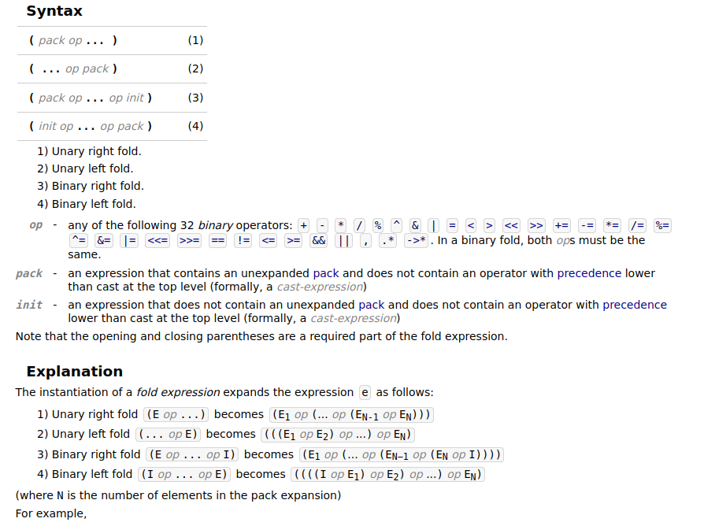
CRTP - Curiously recurring template pattern
template <typename T>
struct Base {
void interface() {
// ...
static_cast<T*>(this)->implementation();
// ...
}
static void static_func() {
// ...
T::static_sub_func();
// ...
}
};
struct Derived : Base<Derived> {
void implementation() {}
static void static_sub_func() {}
};
Base знает, что T это его потомок. благодаря этому, мы можем имитировать поведение виртуальных функций
interface() определена у базового класса, но для разных T она себя ведёт по-разному.
в Base нельзя объявить объект типа T - получится циклическая зависимость. Но можно объявить T* или T&.
функция Base<Derived>::interface() известна компилятору, хотя и объявлена перед объявлением структуры struct Derived. Тем не менее, эта функция не инстанцируется до момента фактического вызова, который должен произойти после объявления Derived.
template <typename T>
struct Base {
void interface() {
static_cast<T*>(this)->implementation();
}
};
struct A : Base<A> {
void implementation() {
std::cout << "A::implementation()" << std::endl;
}
};
struct B : Base<B> {
void implementation() {
std::cout << "B::implementation()" << std::endl;
}
};
template <typename T>
void f(Base<T>& b) {
b.interface();
}
int main() {
A a;
B b;
f(a); // A::implementation()
f(b); // B::implementation()
}
но это не совсем честный полиморфизм, потому что, например, нельзя сделать контейнер базового класса, в отличии от динамического полиморфизма
int main() {
A a;
B b;
std::vector<Base<?>> v;
v.push_back(a);
v.push_back(b);
for (auto obj : v) {
obj.interface();
}
}
Expression templates
Способ создавать структуры, представляющие compile time вычисления, где выражения вычисляются по мере необходимости
Пример - складывание геометрических векторов. Если мы не хотим считать сумму векторов целиком, а только получить какой-то i-ый элемент (ленивое складывание)
Код можно посмотреть в википедии, не буду копировать его сюда
Исключения
throw- альтернативый способ выйти из функции на ряду сreturn
int divide(int a, int b) {
if (b == 0) {
throw std::logic_error("Divide by zero!");
}
return a / b;
}
происходит раскрутка стека. уничтожаются локальные переменные в порядке, обратном созданию (как и при обычном выходе из функции), и мы выскакиваем на уровень выше.
в какой момент это прекращается?
try+catch- ловим исключение
try {
divide(10, 0);
} catch (std::logic_error& err) {
std::cout << err.what() << std::endl;
}
исключение может прилететь и из глубины, если его ещё никто не поймал. есть будет подходящий catch, то мы поймаем исключение. ловить можно по значению, ссылке, константной
можно писать catch(...) - ловим любое исключение
исключения - очень тяжеловесная операция
-
комментарий про раскручивание стека 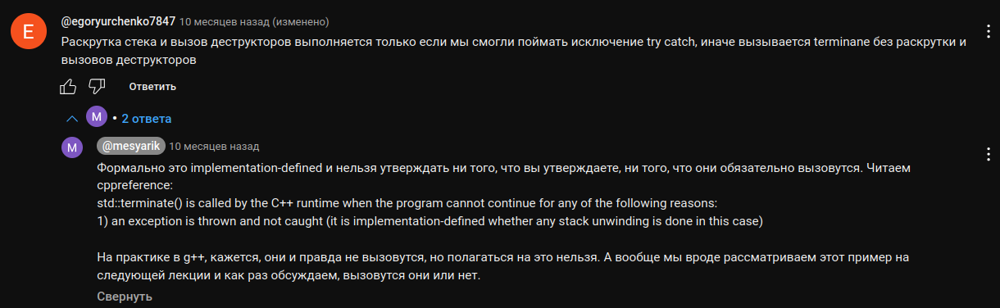
-
какие операторы стандартной библиотеки бросают исключения
throw- оператор
new-std::bad_alloc
terminate called after throwing an instance of 'std::bad_alloc' what(): std::bad_alloc Aborted (core dumped)std::terminate - бросается рантаймом C++ если исключение брошено и не поймано (и много других пунктов)
std::abort - бросается после terminate, просит ос убить программу с вердиктом abort (сишная функция)dynamic_castк ссылке -std::bad_casttypeidот nullptr -std::bad_typeid
Разница между исключением и runtime error
- runtime error
try {
std::vector<int> v;
v[1'000'000] = 1; // Segmentation fault (core dumped)
} catch(...) {
std::cout << "Caught!\n";
}
int x; std::cin >> x;
try {
std::cout << 5/x; // Floating point exception (core dumped)
} catch(...) {
std::cout << "Caught!\n";
}
это не плюсовый exception! это исключительная ситуация процессора
Segmentation fault, Floating point exception, Aborted - виды RE, но далеко не все из них обусловлены плюсовыми exception. если падаем из-за плюсового exception, то низкоуровневая причина падения - Aborted.
плюсовые exception - уровень абстракции над этим всем. std::runtime_error - частный случай exception, который ничего не имеет общего с низкоуровнеывми RE ошибками
- иерархия исключений cppreference 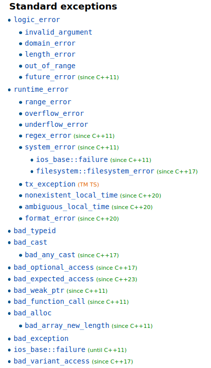
обычно, logic_error - ошибка, в которой виноват пользователь. runtime_error - что-то пошло не так
Лекция 27
более подробный текст по ссылке выше
- причины, почему программы падают 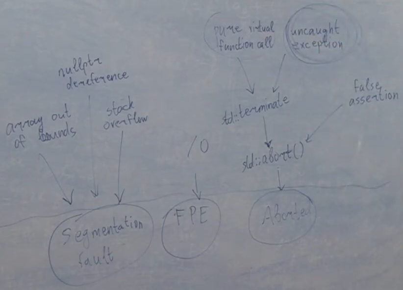
Exceptions handling
struct A {
A() { std::cout << "A\n"; }
A(const A&) { std::cout << "copy\n"; }
~A() { std::cout << "~A\n"; }
};
void f(int x) {
A a;
if (x == 0) {
throw a;
}
}
int main() {
try {
f(0);
} catch (...) {
std::cout << "caught!\n";
}
}
объект скопируется в динамическую память (может быть в какую-то заранее выделенную статическую - это уже implementation defined)
A
copy
~A
caught!
~A
если ловим по значению, будет ещё одно копирование - обратно на стек
try {
f(0);
} catch (A a) {
std::cout << "caught!\n";
}
A
copy
~A
copy
caught!
~A
~A
по ссылке копирования не будет
bad_alloc
try{
new int[400'000'000'000];
} catch (std::bad_alloc& ex) {
std::cout << &ex << '\n';
}
под него резервируется память заранее в статической памяти (Emergency buffer)
throwвнутриcatch
try {
f(0);
} catch (A& a) {
throw a; // старый объект а уничтожится, создаётся новый
}
но можно кинуть дальше (наверх!) тот же объект
try {
f(0);
} catch (A& a) {
throw;
}
если делаем throw, дальнейшие catch того же уровня игнорируются, ловить будут только catch уровнем выше
try {
try {
f(0);
} catch (A& a) {
std::cout << "caught!" << &a << '\n';
throw;
}
} catch (A& a) {
std::cout << "caught again!" << &a << '\n'; // такой же адрес
}
но если бы сделали throw a;, объект бы скопировался
-
если исключение не ловится, то компилятор не гарантирует, что вызовутся деструкторы
снова вставлю комментарий с прошлой лекции -
multiple catch
для catch не применяются правила перегрузки, не делается выбор, какая конверсия лучше. ловится ровно тот тип, который мы указали
2 исключения:
- можно навесить
const - можно ловить наследника по ссылке на родителя, или по значению (срезка)
нет никакой перегрузки, выбирается первый подходящий catch
struct Mom {};
struct Son : Mom {};
int main() {
try {
Son s;
throw s; // caught Mom
} catch (Mom) {
std::cout << "caught Mom";
} catch (Son) {
std::cout << "caught Son";
} catch (...) {
std::cout << "other";
}
}
но если наследование приватное, то выведется caught Son, из main не можем использовать тот факт, что сын наследник мамы
тут ещё бредовые примеры, про множественное наследование
RAII (Resource Acquisition Is Initialization)
рассмотрим проблему при владении ресурсом и исключениях
void g(int y) {
if (y == 0) {
throw 1;
}
}
void f(int x) {
int* p = new int(x);
g(*p);
delete p;
}
для решения воспользуемся тем, что в языке есть деструкторы - сделаем обертку, которая будет освобождать память в деструкторе. тогда не важно каким образом мы выйдем из функции, delete всё равно будет вызван. такая обертка называется умным указателем
его нельзя явно копировать, потому что появится проблема множественно владения ресурсом и double free
можно явно запретить копирование - получим std::unique_ptr
template <typename T>
struct unique_ptr {
T* p;
unique_ptr(T* p): p(p) {}
unique_ptr(const unique_ptr&) = delete;
unique_ptr& operator=(const unique_ptr&) = delete;
~unique_ptr() { delete p; }
T& operator*() {
return *p;
}
};
можно хранить счётчик ссылок - std::shared_ptr
Исключения в конструкторах
struct A {
A() { std::cout << "A"; }
~A() { std::cout << "~A"; }
};
struct S {
A a;
S(int x) {
std::cout << "S";
if (x == 0) throw 1;
}
~S() { std::cout << "~S"; }
};
int main() {
try {
S s(0);
} catch (...) {}
}
вызовется деструктор A, т.к. оно уже успело создаться
AS~A
но вот так будет утечка памяти
struct S {
A* a;
S(int x) : a(new A()) {
std::cout << "S";
if (x == 0) throw 1;
}
~S() {
std::cout << "~S";
delete a;
}
};
решение - RAII
- исключение в списке инициализации
struct A {
A(int x) {
std::cout << "A";
if (x == 0) throw 1;
}
~A() {
std::cout << "~A";
}
};
struct S{
A a;
A aa;
A aaa;
S(int x) a(1), aa(0), aaa(2) {
std::cout << "S";
~S(){
std::cout << "~S";
}
};
вызовутся деструкторы всех тех полей, которые успели создаться уже к этому моменту, то есть а(1)
- Function try block cppreference
struct S {
A a;
A aa;
A aaa;
S(int x) try : a(1), aa(0), aaa(2) {
std::cout << "S";
} catch (...) {
std::cout << "caught!";
}
~S(){
std::cout << "~S";
}
};
но что будет с таким объектом?
int main() {
S s(0);
}
если мы написали такой function try block в конструкторе, то автоматически делается throw из него, поэтому в main прилетит исключение
такое можно писать для любой функции
void f() try {
} catch (...) {
}
Исключения в деструкторах
это зло!
проблема в том, что деструктор сам по себе мог быть вызван по причине того, что было брошено исключение
до C++11 нельзя бросать исключение из деструктора, если деструктор был вызван по причине летящего исключения. начиная с C++11 просто нельзя бросать исключение из деструктора (вызывается terminate)
можно разрешить с помощью noexcept(false)
~S() noexcept(false) {
std::cout << "~S";
throw 1;
}
но, если деструктор вызван по причине того, что было брошено исключение, то всё равно произойдет terminate
try {
S s(0);
throw 1; // terminate
} catch(...) {}
как в деструкторе проверить, летит ли уже исключение?
std::uncaught_exception (deprecated in C++17, removed in C++20)
std::uncaught_exceptions (since C++17)
возможна ситуация, когда одновременно летит несколько exceptions
Лекция 28
Exception safety
есть 4 уровня безопасности относительно исключений (cppreference):
- Nothrow (or nofail) exception guarantee — the function never throws exceptions.
- Strong exception guarantee — If the function throws an exception, the state of the program is rolled back to the state just before the function call (for example, std::vector::push_back). (большинство фукнций стандартных контейнеров)
- Basic exception guarantee — If the function throws an exception, the program is in a valid state. No resources are leaked, and all objects' invariants are intact.
- No exception guarantee — If the function throws an exception, the program may not be in a valid state: resource leaks, memory corruption, or other invariant-destroying errors may have occurred.
Generic components may, in addition, offer exception-neutral guarantee: if an exception is thrown from a template parameter (e.g. from the Compare function object of std::sort or from the constructor of T in std::make_shared), it is propagated, unchanged, to the caller.
- Dynamic exception specification (deprecated in C++11, removed in C++17)
до C++11 можно было писать так
void f() throw {}
но сейчас так делать не надо
- noexcept (C++11) - спецификатор
помечает функцию, как не кидающей исключение
void f() noexcept {
}
если мы пишем noexcept, то мы обещаем, что мы не будем бросать исключения из своей функции, но можно делать так
void f() noexcept try {
} catch (...) {
}
если из noexcept функции всё-таки брошено исключение, то произойдёт terminate
можно делать условный noexcept
template <typename T>
void f() noexcept(std::is_reference_v<T>) {
}
- noexcept - оператор
в compile time проверяет, является ли данное выражение noexcept
template <typename T>
void g() {}
int main(){
std::cout << noexcept(g<int>()); // 0
}
для функций проверяет, помечена ли она noexcept, для стандартных операторов noexcept являются все, кроме new, dynamic_cast, typeid, throw
так можно помечать функцию noexcept в зависимости от условия
template <typename T>
void g() {}
template <typename T>
void f() noexcept(noexcept(g<T>())) {
}
- смысл
noexcept
operator[] у вектора не noexcept, но он исключений не кидает
на самом деле, noexcept помечаются функции, которые в принципе не могут пойти неудачно. когда мы пишем noexcept или когда видим noexcept, то мы должны понимать это так, что ничего плохого не может произойти от вызова этого метода.
все деструкторы являются noexcept по умолчанию (С++11), этого слова явно не написано
Внутреннее устройство vector
сейчас нас интересует только реализация push_back, остальные методы реализуются просто
рассмотрим самую простую реализацию, используя только уже изученные инструменты (приближенно к C++03)
- 1 проблема
нужно научиться делать аллокацию, но не создавая объектов, сколько мы хотим
template <typename T>
class vector {
T* arr_;
size_t sz_;
size_t cap_;
public:
void reserve(size_t newcap) {
T* newarr = new T[newcap]; // вызываются конструкторы по умолчанию
//...
}
void push_back(const T& value) {
if (sz_ == cap_) {
reserve(cap_ > 0 ? cap_ * 2 : 1);
}
//...
}
};
такой код не работает для объектов, у которых нет конструктора по умолчанию
struct S {
int x;
S(int x) : x(x) {}
};
с нашим уровнем знаний нельзя написать ничего лучше
T* newarr = reinterpret_cast<T*>(new char[newcap * sizeof(T)]);
- 2 проблема
нужно скопировать объекты их старой памяти в новую. мы пытаемся сделать присваивание сырым байтам, подnewarr[index]ещё нет никакого объекта
void reserve(size_t newcap) {
T* newarr = reinterpret_cast<T*>(new char[newcap * sizeof(T)]);
for (size_t index = 0; index < sz_; ++index) {
newarr[index] = arr_[index]; // UB
}
//...
}
решение с memcpy не будет работать, если одно из полей объекта является указателем или ссылкой на другое его поле
struct Strange {
int x;
int& r;
Strange(int y) : x(y), r(x) {}
};
но такие объекты должны переживать реаллокацию
спойлер: std::string является таким типом
нужно по данному адресу вызвать конструктор данного типа (на сырой памяти)
решение: оператор placement new cppreference
new(newarr + index) T(arr_[index]);
- 3 проблема
как вызвать деструкторы для объектов в старой памяти
void reserve(size_t newcap) {
T* newarr = reinterpret_cast<T*>(new char[newcap * sizeof(T)]);
for (size_t index = 0; index < sz_; ++index) {
new(newarr + index) T(arr_[index]);
}
delete[] arr_; // удаляем массив char из newcap * sizeof(T) элементов
//...
}
нужно руками вызвать деструкторы, и не только по этому. reserve можно вызывать не обязательно, когда sz == cap. можно сделать reserve, даже если массив не заполнен целиком. в этом случае нужно вызвать именно столько деструкторов, сколько было объектов
for (size_t index = 0; index < sz_; ++index) {
(arr_ + index)->~T();
}
delete[] reinterpret_cast<char*>(arr_);
по моему, можно сделать и так
arr_[index].~T();
- 3 проблема - exception safety
хотим безопасный относительно исключений reserve
void reserve(size_t newcap) {
if (newcap < cap_) {
return;
}
T* newarr = reinterpret_cast<T*>(new char[newcap * sizeof(T)]);
for (size_t index = 0; index < sz_; ++index) {
new(newarr + index) T(arr_[index]);
}
for (size_t index = 0; index < sz_; ++index) {
(arr_ + index)->~T();
}
delete[] reinterpret_cast<char*>(arr_);
arr_ = newarr;
cap_ = newcap;
}
- если
newкинет исключение, мы к этому моменту ещё ничего не испортили. так наверх и вылетим с исключениемstd::bad_alloc placement newсам по себе не кидает исключение, но T может кинуть исключение в конструкторе. нужно удалить всё то, что мы успели скопировать- считаем, что деструкторы не кидают исключений
deleteтоже не кидает исключений
void reserve(size_t newcap) {
if (newcap < cap_) {
return;
}
T* newarr = reinterpret_cast<T*>(new char[newcap * sizeof(T)]);
size_t index = 0;
try {
for (; index < sz_; ++index) {
new(newarr + index) T(arr_[index]);
}
} catch (...) {
for (size_t oldindex = 0; oldindex < index; ++oldindex) {
(newarr + oldindex)->~T();
}
delete[] reinterpret_cast<char*>(newarr);
throw;
}
for (size_t index = 0; index < sz_; ++index) {
(arr_ + index)->~T();
}
delete[] reinterpret_cast<char*>(arr_);
arr_ = newarr;
cap_ = newcap;
}
но ведь мы писали push_back
void push_back(const T& value) {
if (sz_ == cap_) {
reserve(cap_ > 0 ? cap_ * 2 : 1);
}
new(arr_ + sz_) T(value);
++sz_;
}
- пытаемся положить на новое место новый элемент. а вдруг он кинет исключение. тогда надо всё вернуть как было.
вывод: выражать push_back через reserve - плохая идея. нужно в том же блоке try пытаться положить новый элемент
vector<bool>
there is one impostor among us
operator[] возвращает не ссылку, а новый временный объект bit_reference. и ему можно присваивать
std::vector<bool> v(10);
v[5] = true;
!пример ситуации, когда rvalue можно и нужно что-то присваивать
template <>
class vector<bool> {
char* arr_ = nullptr;
size_t sz_ = 0;
size_t cap_ = 0;
struct BitReference {
char* cell;
uint8_t index;
BitReference(char* cell, uint8_t index)
: cell(cell), index(index) {}
BitReference operator=(bool b) {
if (b) {
*cell |= (1 << index);
} else {
*cell &= ~(1 << index);
}
return *this;
}
operator bool() const {
return *cell & (1 << index);
}
};
public:
BitReference operator[](size_t index) {
return BitReference(arr_ + index / 8, index % 8);
}
};
Лекция 29
опять немного про вектор
- инвалидация указателей/ссылок - UB
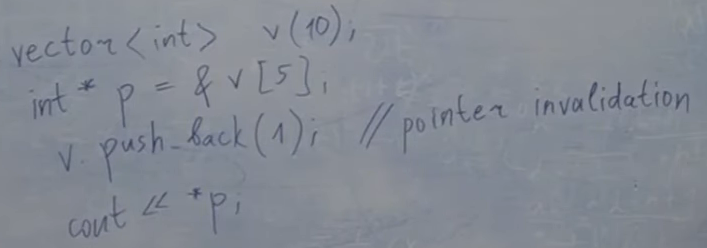 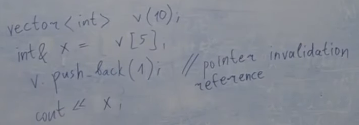
Внутреннее устройство deque
важное отличие deque от vector - он такими свойствами не обладает. это главное, почему он используется под капотом в stack, queue, priority_queue
как реализовать такой контейнер?
-
храним внешний массив указателей на T - buckets 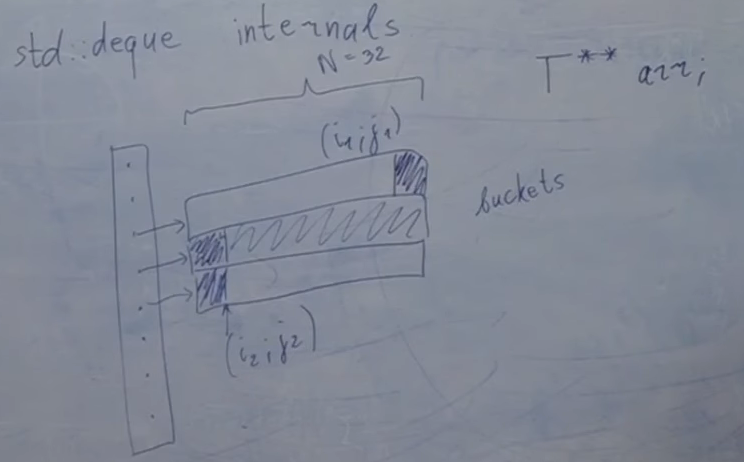
-
когда первый или последний слой заполнены, реаллоцируем внешний массив 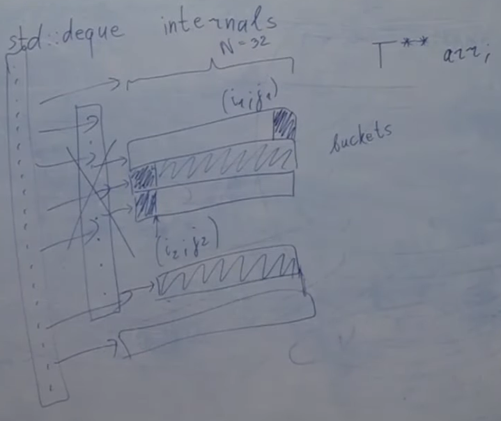
-
внутренние массивы так же являются сырыми байтами, кладем элементы через
placement new -
operator[]работает заO(1), т.к. размер бакетов константный - это можно легко пересчитывать -
у дека нет
reserve,shrink_to_fit -
std::stack, std::queue, std::priority_queue по умолчанию работают над деком
-
почему в стеке
pop()возвращает void а не T?
чтобы возвращать T, его всегда нужно было бы куда-то скопировать
Итераторы
более подробный текст по ссылке выше
не во всех контейнерах можно обращаться по индексу
итератор - тип, который позволяет делать обход последовательности (обобщение указателя). его также можно разыменовывать и инкрементировать
- типы итераторов
- Input Iterator
!=,-> - Forward Iterator
будем видеть одно и то же при проходах - Bidirectional Iterator
-- - Random Access Iterator
+=n,-=n,it1-it2,<,>,<=,>= - Contiguous Iterator (C++17)
сплошной кусок памяти
есть ещё output_iterator - в него можно писать, обсудим отдельно
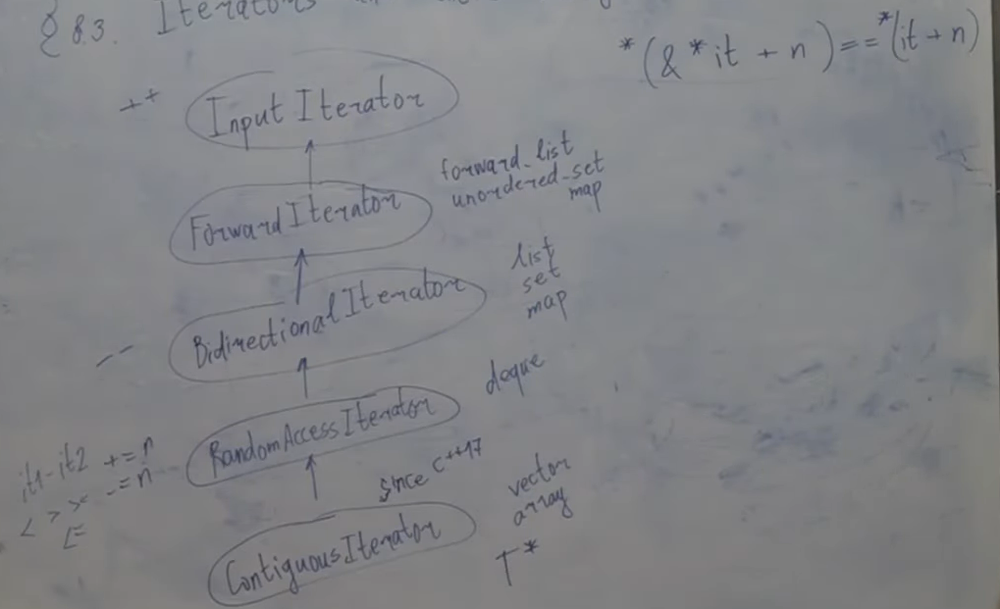
std::set<int> s;
for (int x : s) {
// x
}
означает
for (std::set<int>::iterator it = s.begin(); it != s.end(); ++it) {
// *it
}
на самом деле не совсем так, он запоминает изначальные being и end перед циклом
- cppinsights.io - сайт, который удаляет весь синтаксический сахар
вот на самом деле, во что развернётся for из примера выше
#include <set>
int main()
{
std::set<int, std::less<int>, std::allocator<int> > s = std::set<int, std::less<int>, std::allocator<int> >();
{
std::set<int, std::less<int>, std::allocator<int> > & __range1 = s;
std::_Rb_tree_const_iterator<int> __begin1 = __range1.begin();
std::_Rb_tree_const_iterator<int> __end1 = __range1.end();
for(; operator!=(__begin1, __end1); __begin1.operator++()) {
int x = __begin1.operator*();
}
}
return 0;
}
-
Named Requirements - некоторые свойства типов, которые формально описаны. в том числе, контейнеры и итераторы
-
Algorithms library - алгоритмы стандартной библиотеки, работают с итераторами. название шаблонного параметра подсказывает нам, какой тип итератора нужен
- std::sort требует Random Access Iterator
- std::next_permutation требует Bidirectional Iterator
- std::lower_bound нужен Forward Iterator. на самом деле бинпоиск работает логарифмическое время относительно операций над T (логарифмическое кол-во сравнений), сдвиги итератора не учитываются. для больших объектов (например, строки) может быть осмысленно сделать бинпоиск на связном списке, сэкономив кол-во вызовов операций сравнения. но для Random Access Iterator, оно будет делать
+=
-
как по итератору, понять его вид?
с C++11 есть auto, но это не всегда корректно
template <typename InputIterator>
void find_most_often_number(InputIterator begin, InputIterator end) {
auto x = *begin;
// ...
}
например, для vector<bool> это bit_reference
есть набор метафункций для итераторов - std::iterator_traits
можно узнать тип
template <typename InputIterator>
void find_most_often_number(InputIterator begin, InputIterator end) {
typename std::iterator_traits<InputIterator>::value_type x = *begin;
}
int main() {
std::vector<bool> vb(10);
find_most_often_number(vb.begin(), vb.end());
}
также можно узнать, какая категория итератора iterator_category - пустые структуры (теги). они сделаны с наследованием для удобства проверки на равентсво категорий итератора
Лекция 30
- std::distance - количество шагов от first до last
если Random Access Iterator, то она работает за константное время, иначе за линейное
std::is_base_of - является ли родителем
template <typename Iterator>
typename std::iterator_traits<Iterator>::difference_type
distance(Iterator first, Iterator last) {
if constexpr (std::is_base_of_v<
std::random_access_iterator_tag,
typename std::iterator_traits<Iterator>::iterator_category
>) {
return last - first;
} else {
int i = 0;
for (; first != last; ++first) {
++i;
}
return i;
}
}
int main() {
std::vector<bool> vb(10);
std::cout << ::distance(vb.begin(), vb.end());
}
можно без if constexpr средставми старого C++, но более костыльно - через перегрузку функций
-
std::advance - двигает итератор на n шагов
-
std::prev, std::next - двигает назад или вперёд на n шагов и возвращает итератор
Реализация итераторов
будем дописывать код вектора с 28 лекции
class iterator {
T* ptr;
iterator(T* ptr) : ptr(ptr) {}
public:
iterator(const iterator&) = default;
iterator& operator=(const iterator&) = default;
T& operator*() const { return *ptr; }
T* operator->() const { return ptr; } // вот такой костыль языка
iterator& operator++() {
++ptr;
return *this;
}
iterator& operator++(int) {
iterator copy = *this;
++ptr;
return copy;
}
};
здесь под const iterator - подразумевается аналог константного указателя (поэтому operator* и operator-> помечены const, но возвращают обычную ссылку! на T)
- const_iterator - аналог указателя на const
он уже возвращает const ссылку на T
class const_iterator {
const T* ptr;
const_iterator(T* ptr) : ptr(ptr) {}
public:
const_iterator(const const_iterator&) = default;
const_iterator& operator=(const const_iterator&) = default;
const T& operator*() const { return *ptr; }
const T* operator->() const { return ptr; }
const_iterator& operator++() {
++ptr;
return *this;
}
const_iterator& operator++(int) {
const_iterator copy = *this;
++ptr;
return copy;
}
};
но как не копипастить это 2 раза?
template <bool IsConst>
class base_iterator {
public:
using pointer_type = std::conditional_t<IsConst, const T*, T*>;
using reference_type = std::conditional_t<IsConst, const T&, T&>;
using value_type = T;
private:
pointer_type ptr;
base_iterator(T* ptr) : ptr(ptr) {}
friend class vector<T>;
public:
base_iterator(const base_iterator&) = default;
base_iterator& operator=(const base_iterator&) = default;
reference_type operator*() const { return *ptr; }
pointer_type operator->() const { return ptr; }
base_iterator& operator++() {
++ptr;
return *this;
}
base_iterator& operator++(int) {
base_iterator copy = *this;
++ptr;
return copy;
}
operator base_iterator<true>() const {
return {ptr};
}
};
последний итератор разрешает неявно кастоваться от неконстантного итератора к константному
затем в публичной части
using iterator = base_iterator<false>;
using const_iterator = base_iterator<true>;
iterator begin() { return {arr_}; }
iterator end() { return {arr_ + sz_}; }
const_iterator begin() const { return {arr_}; }
const_iterator end() const { return {arr_ + sz_}; }
но есть ещё cbegin, cend - одинаковый для константного и неконстантного контейнера
const_iterator cbegin() const { return {arr_}; }
const_iterator cend() const { return {arr_ + sz_}; }
- std::reverse_iterator - отдельный класс в стандартной библиотеке
это адаптер над итератором, он хранит в себе итератор и разворачивает все действия в обратную сторону
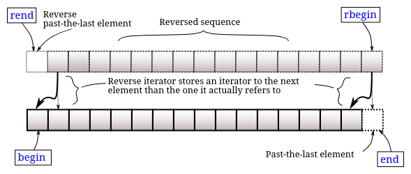
т.е. ++ это -- и наоборот, * или -> это current - 1
так же раньше был std::iterator (deprecated in C++17) - это другое, им не надо пользоваться (итераторы, это внутренние типы контейнеров!)
поэтому напишем
using reverse_iterator = std::reverse_iterator<iterator>;
using const_reverse_iterator = std::reverse_iterator<const_iterator>;
rbegin, rend, crbegin, crend добавятся сами
- инвалидация итераторов
аналогично - UB
std::vector<int> v(10);
std::vector<int>::iterator x = v.begin() + 5;
v.push_back(1);
std::cout << *x;
соответственно это тоже UB
std::vector<int> v = {1, 2, 3, 4, 5};
for (int& x : v) {
v.push_back(x);
}
даже не смотря на то, что begin и end запоминаются заранее, вектор может сделать реаллокацию в теле цикла, и старые итераторы инвалидируются
- fun fact
одно из свойств итератора вектора, что мы должны уметь свапать векторы, но при этом чтобы итераторы сохранялись валидными
в деке указатели и ссылки не инвалидируются, но итераторы инвалидируются (нужно хранить указатель на элемент внешнего массива, но внешний массив может реаллоцироваться при push_back)
Output iterator
int a[10] = {1, 2, 3, 4, 5};
std::vector<int> v(5);
std::copy(a, a + 10, v.begin()); // UB
copy разыменовывает, присваивает и инкрементирует. он ничего не знает про то, что лежит под итератором
-
output iteratorгарантирует, что можно его разыменовывать, инкрементировать и присваивать сколько угодно раз -
std::back_insert_iterator - output итератор, который докладывает элементы в контейнер, для которого он сконструирован
int a[10] = {1, 2, 3, 4, 5};
std::vector<int> v;
std::copy(a, a + 5, std::back_insert_iterator<std::vector<int>>(v));
for (int x : v) {
std::cout << x << " "; // 1 2 3 4 5
}
как его реализовать?
template <typename Container>
class back_insert_iterator {
Container& container;
public:
back_insert_iterator(Container& container) : container(container) {}
back_insert_iterator& operator=(const typename Container::value_type& value) {
container.push_back(value);
return *this;
}
back_insert_iterator& operator++() { return *this; }
back_insert_iterator operator++(int) { return *this; }
back_insert_iterator& operator*() { return *this; }
};
также есть функция std::back_inserter, которая просто создаёт такой итератор, без указания шаблонного параметра
template<class Container>
std::back_insert_iterator<Container> back_inserter(Container& c)
{
return std::back_insert_iterator<Container>(c);
}
std::copy(a, a + 5, std::back_inserter(v));
также есть std::front_inserter и std::inserter
std::insert_iterator принимает контейнер и итератор в контейнере, вызывает insert в этом контейнере, по данному итератору
Лекция 31-34
TODO
Лекция 35
Аллокаторы
идея: пусть у нас есть list на миллион интов. на каждый insert вызывается оператор new. так же с map, set, unordered_set. очевидно, что это работает медленно
почему бы, например, не завести этот list на стеке, если он туда спокойно поместится?
аллокатор - прослойка между контейнером и оператором new
Container -> Allocator -> operator new -> malloc -> OS
алгоритм, который реализован в функции malloc, тоже иногда называется аллокатором. и его тоже можно заменить (аллокаторы уровня C). но мы рассматриваем аллокаторы уровня C++
наивная реализация
template <typename T>
struct allocator {
T* allocate(size_t count) {
return reinterpret_cast<T*>(new char[count * sizeof(T)]);
}
void deallocate(T* ptr, size_t) {
delete[] reinterpret_cast<char*>(ptr);
}
template <typename U, typename... Args>
void construct(U* ptr, const Args&... args) {
new (ptr) U(args...);
}
template <typename U>
void destroy(U* ptr) {
ptr->~U();
}
// объяснение насчет шаблонного U будет позже
};
это не совсем правда, в дальейшем мы будем её улучшать
- теперь исправим код вектора с 30 лекции
теперь вектор принимает аллокатор вторым шаблонным параметром
template <typename T, typename Alloc = std::allocator<T>>
class vector {
T* arr_ = nullptr;
size_t sz_ = 0;
size_t cap_ = 0;
Alloc alloc_;
// ...
};
вот как поменяется метод reserve
void reserve(size_t newcap) {
if (newcap < cap_) {
return;
}
// T* newarr = reinterpret_cast<T*>(new char[newcap * sizeof(T)]);
T* newarr = alloc_.allocate(newcap);
size_t index = 0;
try {
for (; index < sz_; ++index) {
// new(newarr + index) T(arr_[index]);
alloc_.construct(newarr + index, arr_[index]);
}
} catch (...) {
for (size_t oldindex = 0; oldindex < index; ++oldindex) {
// (newarr + oldindex)->~T();
alloc_.destroy(newarr + oldindex);
}
// delete[] reinterpret_cast<char*>(newarr);
alloc_.deallocate(newarr, newcap);
throw;
}
for (size_t index = 0; index < sz_; ++index) {
// (arr_ + index)->~T();
alloc_.destroy(arr_ + index);
}
// delete[] reinterpret_cast<char*>(arr_);
alloc_.deallocate(arr_, cap_);
arr_ = newarr;
cap_ = newcap;
}
-
конструкторы стандартных контейнеров обычно принимают аллокатор
-
дефолтный конструктор вектора помечен
noexcept(noexcept(Allocator())) -
стандартные аллокаторы равны
-
у контейнеров есть метод
get_allocator- возвращает копию текущего аллокатора (аллокатор - всегда маленький объект) -
примеры нестандартных аллокаторов
- PoolAllocator - изначально выделаем массив и выдаём кусочки
- StackAllocator - выделаяет всё на стеке, в констукторе принимаем массив, например как-то так:
std::array<char, 1000000> arr; StackAllocator alloc(arr); std::list<int, StackAllocator<int>> lst; - FreeListAllocator - изначально выделяем объекты как обычно. а когда освобождаем, сохраняем их в свой список свободных кусков памяти, и в следующие разы бёрем оттуда
Проблемы
- не всем контейнерам нужно аллоцировать тот тип
T, от которого был создан аллокатор. напримерlistиmapдолжны аллоцировать некийNode, но пользователь про него ничего не знает, это приватный тип
начнем релизовывать list
template <typename T, typename Alloc = std::allocator<T>>
class list {
struct BaseNode {
BaseNode* prev;
BaseNode* next;
};
struct Node {
T value;
};
BaseNode fakeNode;
size_t count;
Alloc/*???*/ alloc;
};
хотим иметь аллокатор на Node, но мы не можем его объявить, мы даже не можем назвать его тип
- костыль такой:
в аллокаторе есть метафункция (структура), которая позволяет получить такой же аллокатор, но другогоT-rebind
в std::allocator она (deprecated in C++17, removed in C++20)
template <typename U>
struct rebind {
using other = allocator<U>;
};
теперь можем использовать этот тип
template <typename T, typename Alloc = std::allocator<T>>
class list {
struct BaseNode {
BaseNode* prev;
BaseNode* next;
};
struct Node {
T value;
};
BaseNode fakeNode;
size_t count;
typename Alloc::rebind<Node>::other alloc;
};
clang подсказывает исправить dependent template name, хотя g++ компилирует
typename Alloc::template rebind<Node>::other alloc;
- теперь как инициализировать этот аллокатор?
list(const Alloc& alloc) : fakeNode{}, count(), alloc(/*???*/)
надо добавить в аллокатор конструктор от аллокатора того же типа, с другим любым шаблонным параметром
template <typename U>
allocator(allocator<U>) {}
теперь можно спокойно написать
list(const Alloc& alloc) : fakeNode{}, count(), alloc(alloc) {}
-
теперь понятно, почему изначально
constructпринимал произвольный типUв качестве шаблонного
пример - когда мы аллоцировалиNode, но надо вызватьconstructдля типаT. аналогично сdestroy -
почему аллокатор не может быть шаблонным шаблонным параметром?
template <typename T, template<typename> Alloc = std::allocator>
class list {
//...
Alloc<Node> alloc;
//...
};
ответ: у аллокатора могут быть другие шаблонные параметры, не факт что он всегда один, и не факт, что это всегда будут типы
например
std::array<char, 1000000> arr;
StackAllocator<int, 1000000> alloc(arr);
- аллокатор не влияет на размер контейнера сейчас sizeof нашего вектора 32, но можно сделать empty base optimization - наследуемся от аллокатора
class vector : private Alloc {
T* arr_ = nullptr;
size_t sz_ = 0;
size_t cap_ = 0;
//...
};
теперь sizeof равен 24
Stateful аллокаторы
- копирование аллокаторов
рассмотрим PoolAllocator, который хранит большой массив в динамической памяти.
при копировании мы хотим, чтобы новый аллокатор ссылался на тот же массив, но не копировал его
возникает проблема общего владения памятью. одно из решений - shared_ptr
можно сделать отдельный класс pool, в котором заниматься обработкой этого массива и сам pool вообще запретить копировать, а аллокатору хранить указатель на этот pool
allocator_traits
у разных аллокаторов многие методы выглядят одинаково
было бы удобно иметь структуру, которая бы предопределяла некоторые функции и некоторые using-и
allocator_traits за нас определяет функцию construct, destroy, структуру rebind, если у нас их нет
эти методы статические, сам объект allocator_traits мы никогда не создаём
мы пока не умеем такое писать
template <typename Alloc>
struct allocator_traits {
template <typename U, typename... Args>
static void construct(Alloc& alloc, U* ptr, const Args&... args) {
if constexpr (/* Alloc has method construct */) {
alloc.construct(ptr, args...);
} else {
new (ptr) U(args...);
}
}
};
аналогично для destroy и rebind (здесь это будет называться rebind_alloc)
также есть allocate и deallocate - просто для симметрии. поэтому контейнеры на самом деле, обращаются к allocator_traits, а не к аллокатору напрямую
поэтому наша исходная схема выглядит так:
Container -> allocator_traits -> Allocator -> operator new -> malloc -> OS
итоговый код allocator
итоговый код vector (сделал сразу с ebo)
итоговый код list
Лекция 36
перепишем код вектора с использованием allocator_traits
void reserve(size_t newcap) {
if (newcap < cap_) {
return;
}
T* newarr = AllocTraits::allocate(alloc_, newcap);
size_t index = 0;
try {
for (; index < sz_; ++index) {
AllocTraits::construct(alloc_, newarr + index, arr_[index]);
}
} catch (...) {
for (size_t oldindex = 0; oldindex < index; ++oldindex) {
AllocTraits::destroy(alloc_, newarr + oldindex);
}
AllocTraits::deallocate(alloc_, newarr, newcap);
throw;
}
for (size_t index = 0; index < sz_; ++index) {
AllocTraits::destroy(alloc_, arr_ + index);
}
AllocTraits::deallocate(alloc_, arr_, cap_);
arr_ = newarr;
cap_ = newcap;
}
Allocator-aware контейнеры (C++11)
когда контейнер копируется, должен ли он копировать аллокатор?
иногда нам бы хотелось, чтобы контейнер копировал аллокатор, а иногда, чтобы он создавал новый
-
контейнер при копировании, спрашивает у аллокатора, что с ним делать. у аллокатора есть опциональный метод
select_on_container_copy_construction- возвращает аллокатор по значению, если его нетallocator_traitsдоопределит его за нас -
аналогично для присваивания -
propagate_on_container_copy_assignment, только это метафункция (true или false в compile time) -
реализация оператора присваивания для вектора
пока наивная реализация, без присваивания аллокатора
vector& operator=(const vector& other) {
if (this == &other) {
return *this;
}
T* newarr = AllocTraits::allocate(alloc_, other.cap_);
size_t i = 0;
try {
for (; i < other.sz_; ++i) {
AllocTraits::construct(alloc_, newarr + i, other[i]);
}
} catch(...) {
for (size_t j = 0; j < i; ++j) {
AllocTraits::destroy(alloc_, newarr + j);
}
AllocTraits::deallocate(alloc_, newarr, other.cap_);
throw;
}
for (size_t i = 0; i < sz_; ++i) {
AllocTraits::destroy(alloc_, arr_ + i);
}
AllocTraits::deallocate(alloc_, arr_, cap_);
arr_ = newarr;
sz_ = other.sz_;
cap_ = other.cap_;
return *this;
}
сейчас аллокатор намертво привязан к контейнеру. но хотим учитывать возможность забрать себе аллокатор
проблема - старые объекты нужно удалять старым аллокатором, а новые создавать новым. но при этом всё еще старые объекты нужно удалить позже, чтобы не нарушать exception safety
vector& operator=(const vector& other) {
if (this == &other) {
return *this;
}
Alloc newalloc = AllocTraits::propagate_on_container_copy_assignment::value
? other.alloc_ : alloc_;
T* newarr = AllocTraits::allocate(newalloc, other.cap_);
size_t i = 0;
try {
for (; i < other.sz_; ++i) {
AllocTraits::construct(newalloc, newarr + i, other[i]);
}
} catch(...) {
for (size_t j = 0; j < i; ++j) {
AllocTraits::destroy(newalloc, newarr + j);
}
AllocTraits::deallocate(newalloc, newarr, other.cap_);
throw;
}
for (size_t i = 0; i < sz_; ++i) {
AllocTraits::destroy(alloc_, arr_ + i);
}
AllocTraits::deallocate(alloc_, arr_, cap_);
arr_ = newarr;
sz_ = other.sz_;
cap_ = other.cap_;
alloc_ = newalloc;
return *this;
}
оператор присваивания аллокатора не должен кидать исключение - требование аллокатора (однако такого на cppreference не нашлось)
на самом деле, если новый аллокатор равен старому, то нет смысла присваивать новый аллокатор и выделять новую память. надо посмотреть, не хватает ли нам нашей текущей памяти (дописывать не стали)
- еще в аллокаторах есть метафункция
is_always_equal- в compile time проверяем, правда ли что все аллокаторы такого типа равны
(C++11, deprecated in C++23, removed in C++26)
Перегрузка new и delete
можно глобально подменить операторы new и delete. это более низкоуровневая вещь, чем переопределение аллокаторов
- оператор
newсостоит из 2 частей:- выделение памяти - фунция
operator new - вызов конструктора на выделенной памяти -
placement new
- выделение памяти - фунция
на самом деле оператор new и функция operator new это 2 разных вещи. перегрузить можно только функцию operator new!!!
с delete всё наоборот
void* operator new(size_t n) {
std::cout << n << " bytes allocated\n";
return malloc(n);
}
void operator delete(void* ptr) {
free(ptr);
}
int main() {
std::vector<int> v;
for (int i = 0; i < 50; ++i) {
v.push_back(i);
}
}
4 bytes allocated
8 bytes allocated
16 bytes allocated
32 bytes allocated
64 bytes allocated
128 bytes allocated
256 bytes allocate
- аналогично можно сделать для
new[]иdelete[]
void* operator new[](size_t n) {
std::cout << n << "[] bytes allocated\n";
return malloc(n);
}
void operator delete[](void* ptr) {
free(ptr);
}
int main() {
int* ptr = new int[100]; // 400[] bytes allocated
delete[] ptr;
}
заметим, что в функцию пришел именно размер в байтах
но изначально new[] вызывает в себе new. поэтому, если его не определить, будет вот так
void* operator new(size_t n) {
std::cout << n << " bytes allocated\n";
return malloc(n);
}
void operator delete(void* ptr) {
free(ptr);
}
int main() {
int* ptr = new int[100]; // 400 bytes allocated
delete[] ptr;
}
- исправим код аллокатора
можно вызывать не оператор new, в функцию operator new
T* allocate(size_t count) {
// return reinterpret_cast<T*>(new char[count * sizeof(T)]);
return operator new(count * sizeof(T));
}
void deallocate(T* ptr, size_t) {
// delete[] reinterpret_cast<char*>(ptr);
operator delete(ptr);
}
эта функция operator new отрабатывает, как первая половина оператора new
- как оператор
delete[]понимает, сколько вызвать деструкторов?
void* operator new(size_t n) {
std::cout << n << " bytes allocated\n";
return malloc(n);
}
void operator delete(void* ptr) {
free(ptr);
}
int main() {
std::cout << sizeof(std::string) << "\n";
std::string* ps = new std::string[10];
delete[] ps;
}
почему выделилось больше байт?
32
328 bytes allocated
когда мы выделяем нетривиальные типы, оператору new[] нужно записать, сколько штук их было, чтобы delete[] знал, сколько деструкторов вызвать
поэтому operator delete[] неявно за нас делает сдвиг на 8 байт
не нужно руками вызывать деструктор
итоговый код allocator
итоговый код vector
Лекция 37
Версии оператора new
- std::nothrow_t - тип, который нужен, чтобы объявить переменную
std::nothrow
это версия оператора new, которая не бросает исключение
пример по ссылке выше
try {
while (true) {
new int[100000000ul]; // throwing overload
}
} catch (const std::bad_alloc& e) {
std::cout << e.what() << '\n';
}
while (true) {
int* p = new(std::nothrow) int[100000000ul]; // non-throwing overload
if (p == nullptr) {
std::cout << "Allocation returned nullptr\n";
break;
}
}
- можно написать
newс произвольным набором параметров
void* operator new(size_t n, int a, double b) {
std::cout << n << " bytes allocated with custom new " << a << " " << b << "\n";
return malloc(n);
}
int main() {
int* p = new(1, 3.14) int(5);
delete p; // UB
}
если вызвали new с кастомными параметрами, то ему нужно симметрично вызывать delete с кастомными параметрами. но только для delete это будет именно функция operator delete и деструктор нужно будет вызывать руками. потому что нет синтаксиса по вызову оператора delete с кастомными параметрами
void* operator new(size_t n, int a, double b) {
std::cout << n << " bytes allocated with custom new " << a << " " << b << "\n";
return malloc(n);
}
void operator delete(void* ptr, int a, double b) {
std::cout << "custom delete called " << a << " " << b << "\n";
free(ptr);
}
int main() {
int* p = new(1, 3.14) int(5); // 4 bytes allocated with custom new 1 3.14
operator delete(p, 1, 5.25); // custom delete called 1 5.25
}
следовательно, для нетривиального типа нужно было бы вручную вызывать деструктор
- сценарий, когда
deleteс кастомными параметрами вызывается за нас
struct S {
S() { throw 1; }
};
int main() {
try {
S* p = new(1, 3.14) S();
} catch (...) {
std::cout << "caught\n";
}
}
в таком случае гарантируется, что за нас будет вызван оператор delete от таких же параметров на этом адресе, и только потом полетит исключение
- оператор
deleteи виртуальный деструктор
struct Base {
Base() { std::cout << "created Base\n"; }
~Base() { std::cout << "destroyed Base\n"; }
};
struct Derived : Base {
int* p;
Derived() {
p = new int;
std::cout << "created Derived\n";
}
~Derived() {
delete p;
std::cout << "destroyed Derived\n";
}
};
int main() {
Base* b = new Derived;
delete b;
}
здесь будет утечка памяти - уже разбирали
но даже так будет утечка
struct Base {
Base() { std::cout << "created Base\n"; }
~Base() { std::cout << "destroyed Base\n"; }
};
struct Derived : Base {
int x = 0;
Derived() { std::cout << "created Derived\n"; }
~Derived() { std::cout << "destroyed Derived\n"; }
};
int main() {
Base* b = new Derived;
delete b;
}
откуда delete знает, какой деструктор ему вызвать и по какому указателю освободить память?
struct Base {
Base() { std::cout << "created Base\n"; }
~Base() { std::cout << "destroyed Base\n"; }
};
struct Derived : Base {
// int x = 0;
Derived() { std::cout << "created Derived\n"; }
~Derived() { std::cout << "destroyed Derived\n"; }
};
int main() {
Base* b = new Derived[5];
delete[] b;
}
created Base
created Derived
created Base
created Derived
created Base
created Derived
created Base
created Derived
created Base
created Derived
destroyed Base
destroyed Base
destroyed Base
destroyed Base
destroyed Base
delete[] вызывает дестукторы, думая, что это массив из Base. а потом вызывает освобождение памяти, думая, что было столько Base, сколько он прочитал из сдвига. но на самом деле там были Derived
поэтому даже если нет выделения каких-то ресурсов, всё равно это будет неправильно работать - ещё одна причина делать виртуальный деструктор
такое будет работать только с одним объектом!!!
struct Base {
Base() { std::cout << "created Base\n"; }
virtual ~Base() { std::cout << "destroyed Base\n"; }
};
struct Derived : Base {
int x = 0;
Derived() { std::cout << "created Derived\n"; }
~Derived() { std::cout << "destroyed Derived\n"; }
};
int main() {
Base* b = new Derived;
delete b; // OK
}
но с delete[] всё равно будет утечка
struct Base {
Base() { std::cout << "created Base\n"; }
virtual ~Base() { std::cout << "destroyed Base\n"; }
};
struct Derived : Base {
int x = 0;
Derived() { std::cout << "created Derived\n"; }
~Derived() { std::cout << "destroyed Derived\n"; }
};
int main() {
Base* b = new Derived[5];
delete[] b;
}
created Base
created Derived
created Base
created Derived
created Base
created Derived
created Base
created Derived
created Base
created Derived
destroyed Base
destroyed Base
destroyed Base
destroyed Base
destroyed Base
- оператор
newкак член класса
struct S {
void* operator new(size_t n) {
std::cout << "operator new for S\n";
return malloc(n);
}
void operator delete(void* ptr) {
std::cout << "operator delete for S\n";
free(ptr);
}
};
int main() {
S* p = new S;
delete p;
}
operator new for S
operator delete for S
можно так же для new[] и delete[]
для этих методов static считается написанным по умолчанию
Правильная реализация operator new из стандартной библиотеки
код new из libc - реализации стандартной библиотеки llvm
static void* operator_new_impl(std::size_t size) {
if (size == 0)
size = 1;
void* p;
while ((p = std::malloc(size)) == nullptr) {
// If malloc fails and there is a new_handler,
// call it to try free up memory.
std::new_handler nh = std::get_new_handler();
if (nh)
nh();
else
break;
}
return p;
}
_LIBCPP_OVERRIDABLE_FUNCTION(_Znwm, void*, operator new, (std::size_t size)) _THROW_BAD_ALLOC {
void* p = operator_new_impl(size);
if (p == nullptr)
__throw_bad_alloc_shim();
return p;
}
new всегда выделяет один байт. в си, а отличии от c++, не было требования, что все объекты имеют разные адреса
std::new_handler - функция, которая должна попытаться что-то сделать в случае неудачного выделения памяти, прежде чем будет брошен bad_alloc (по умочанию ничего)
мы можем вызвать std::set_new_handler и передать туда адрес какой-то функции. она вызовется перед тем, как будет bad_alloc
_LIBCPP_WEAK - макрос компилятора, который разрешает переопределять
Запрет создания объектов на стеке/куче
-
как запретить создавать объекты какого-то типа T на куче (только на стеке)? можно пометить оператор
newкак= delete -
как запретить создавать объекты какого-то типа T на стеке (только на куче)? можно сделать деструктор приватным. создание объекта на стеке подразумевает автоматически возможность вызова деструктора
но как создать объект на куче? - мы не сможем вызвать delete
в C++20 добавили специальный оператор delete (destroying deallocation functions) - cppreference
это метод класса. в него нужно передать std::destroying_delete, тогда деструктор автоматически не вызывается. нам нужно вызывать его руками
Выравнивания
рассмортрим пример
int main() {
int* a = new int[10];
char* ac = reinterpret_cast<char*>(a);
++ac;
int* b = reinterpret_cast<int*>(ac);
*b = 1;
int x = *b;
std::cout << x << "\n";
delete[] a;
}
указатель на int, не кратный 4
-fsanitize=undefined:
probe.cpp:12:8: runtime error: store to misaligned address 0x58b345a832b1 for type 'int', which requires 4 byte alignment
0x58b345a832b1: note: pointer points here
00 00 00 00 00 00 00 00 00 00 00 00 00 00 00 00 00 00 00 00 00 00 00 00 00 00 00 00 00 00 00 00
^
probe.cpp:13:9: runtime error: load of misaligned address 0x58b345a832b1 for type 'int', which requires 4 byte alignment
0x58b345a832b1: note: pointer points here
00 00 00 00 01 00 00 00 00 00 00 00 00 00 00 00 00 00 00 00 00 00 00 00 00 00 00 00 00 00 00 00
^
1
по стандарту это UB. не все процессоры умеют читать по адресам, не кратнвым машинному слову
если мы пишем свой стековый аллокатор, надо следить за этим. если из нашего аллокатора сделали аллокатор на другой тип, надо чтобы этот тип лёг на адрес, кратный нужному
- std::align (C++11) - передаём указатель на буффер и его размер. оно сдвигает указатель, так чтобы он был выравнен, и уменьшает размер
как узнать alignment?
-
оператор alignof (C++11) - в compile time возвращает кратность выравнивания
-
как создать буффер, который будет изначально выравнен с каким-то сдвигом? - спецификатор alignas (C++11)
alignas(число) - перед объявлением перменной или типа
- std::aligned_alloc (C++17) -
mallocс конкретным выравниванием
malloc (как и new) по умолчанию возвращает адрес по максимально возможному выравниванию для стандартных типов
std::max_align_t - фейковый тип, который нужен чтобы узначать его выравнивание. его выравнивание максимально возможное из стандартных типов
Битовые поля (Bit-fields)
можно попросить, чтобы поле стуктуры занимало определенное количество бит, а не байт
пример из cppreference
struct S {
// three-bit unsigned field, allowed values are 0...7
unsigned int b : 3;
};
int main() {
S s = {6};
++s.b; // store the value 7 in the bit-field
std::cout << s.b << '\n'; // 7
++s.b; // the value 8 does not fit in this bit-field
std::cout << s.b << '\n'; // formally implementation-defined, typically 0
}
Лекция 38
Scoped allocators
допустим, что мы хотим создавать контейнер из контейнеров, как передать нужный аллокатор внутрь?
template <typename T>
using MyAlloc = std::allocator<T>;
int main() {
using MyString = std::basic_string<char, std::char_traits<char>, MyAlloc<char>>;
MyAlloc<MyString> alloc;
std::vector<MyString, MyAlloc<MyString>> v(alloc);
v.push_back("abc");
v.push_back("cde");
}
что здесь не так?
пусть MyAlloc это PoolAllocator, но тогда все строки будут иметь разные экзмепляры этого аллокатора (будет столько пулов, сколько строк в векторе)
но хотим использовать один (равный для всех) аллокатор. решение:
- std::scoped_allocator_adaptor (C++11)
std::vector<MyString, std::scoped_allocator_adaptor<MyAlloc<MyString>>> v(alloc);
в scoped_allocator_adaptor можно передать несколько аллокаторов - на каждый уровень вложенности контейнеров
как должен работать construct? он должен создать объект T и передать экземпляр аллокатора в то, что он создаёт
очень примерная реализация
template <typename Alloc>
struct scoped_allocator_adaptor {
Alloc alloc_;
template<typename T, typename... Args>
void construct(T* ptr, const Args&... args) {
using InnerAlloc = typename T::allocator_type;
alloc_.construct(ptr, args..., InnerAlloc(alloc_)); // передаем копию нашего аллокатора, но с правильным типом
}
};
вызывали construct строки с аргументами конструктора и дополнительным последним аргументом - аллокатор
но нужно проверить, умеет ли объект T в принципе принимать аллокаторы?
std::uses_allocator - проверяет, есть ли у типа T using allocator_type, который создаётся из нашего аллокатора
template <typename Alloc>
struct scoped_allocator_adaptor {
Alloc alloc_;
template<typename T, typename... Args>
void construct(T* ptr, const Args&... args) {
if constexpr (std::uses_allocator_v<T, Alloc>) {
using InnerAlloc = typename T::allocator_type;
alloc_.construct(ptr, args..., InnerAlloc(alloc_));
} else {
alloc_.construct(ptr, args...);
}
}
};
это всё ещё не совсем правда, не будем углубляться в точную реализацию
Атрибуты (C++11)
можно помечать функции и аргменты функций атрибутами
они пишутся в двойных квадратных скобках [[...]]
- no_unique_address - можно этому объекту не заводить отдельный адрес
- nodiscard - выдаёт warning, если результат функции не используется
- deprecated - что-то устарело
- maybe_unused - этот аргумент может не использоваться в теле функции
- likely/unlikely - подсказки о ветвлении, чтобы лучше оптимизировать код
- assume - предположение о каком-то условии, чтобы исходя из этого условия лучше оптимизировать код
Move-семантика (С++11)
с нашими текущими знаниями очевидно, что многие вещи работают не оптимально
- рассмотрим пример
std::vector<std::string> v;
v.push_back("abc");
где push_back выглядит вот так
void push_back(const T& value) {
// ...
new(ptr) T(value); // явно такого нет, но сводится к этому
// ...
}
что происходит со строкой?
- создаётся временная строка из
const char* - к ней привязывается константкая ссылка, как к временному объекту
- вызывается конструктор с помощью
placement new - временная строка уничтожается
итого: было создано 2 строки
как нам научиться класть объекты так, чтобы не копировать их второй раз?
даже если напишем так, это ничему не поможет
v.push_back(std::string("cde"));
emplace_back- метод, который принимает не объект T, а аргументы, из которых создаёт T на месте
template <typename... Args>
void emplace_back(const Args&... args) {
// ...
new(ptr) T(args...);
// ...
}
здесь
- принимается ссылка на
const char* - вызывается конструктор с помощью
placement new
итог: создана только 1 строчка
но глобально это проблему не решает. мы просто спустили проблему на уровень глубже. пример - std::vector<std::vector<std::string>>. промежуточный вектор создан не будет, но под каждую строку будет создан промежуточный объект
- проблема не только с контейнерами, а с любым сохранением данных в какой-то класс
struct S {
std::string data;
S(const std::string& str) : data(str) {}
};
как бы мы не приняли строку (по значению, ссылке, константной ссылке), нам нужно будет её скопировать
- ещё одна проблема - исключения
std::string s("abc");
throw s;
чтобы бросить объект, надо сначала его создать, а только потом скопировать в динамическую память
- move конструктор
идея: хотим забирать данные, а не копировать
мы берём строку, её поля зануляем, а себе забирем то, что у неё лежало
class string {
public:
string(string&& other) // некий новый тип ссылок
: arr(other.arr), sz(other.sz), cap(other.cap)
{
other.arr = nullptr;
other.sz = other.cap = 0;
}
private:
char* arr;
size_t sz;
size_t cap;
};
мы пока не знаем, что это за тип - string&&. объясним это позже
зачем мы делаем other.sz = other.cap = 0? мы хотим, чтобы объект остался в консистентном состоянии (чтобы мы могли им дальше пользоваться)
можно сделать = default. тогда просто поэлеметно будут вызваны move конструкторы полей. а если поля обычные типы, то будет обычное копирование
string& operator=(string&& other) {
if (this == &other){
return *this;
}
delete[] arr;
arr = other.arr; other.arr = nullptr;
sz = other.sz; other.sz = 0;
cap = other.cap; other.cap = 0;
return *this;
}
Если у нас в классе есть хотя бы один нетривиальный:
- copy конструктор
- copy assignment оператор
- деструктор
- move конструктор
- move assignment оператор
то надо реализовать их всех
- move для базовых типов = копирование !!!
поэтому дефолтный move конструктор не подходит для строки, вектора и любых типов, у которых нетривиальное копирование (скопируется указатель)
можно вообще не писать move конструктор и move оператор присваивания, тогда в случае попытки их вызова будут вызываться их копирующие аналоги
это и есть обратная совместимость с C++03: если не упоминаем move конструктор и move оператор присваивания, то всё работает по старинке (как будто мы копируем). именно поэтому весь наш прошлый код работал ожидаемо
Лекция 39
- тип, который можно мувать, но нельзя копировать
можно написать для типа move операции, но для копирования пометить = delete
пример - std::unique_ptr. понятно, что по смыслу его нельзя скопировать. но можно мувнуть, забрав владение
Mistic function std::move
как компилятор понимает, когда вызывать move операции?
короткий ответ: если компилятор видит, что мы вызываемся от rvalue, то он автоматически вызывает move операцию (если может), а от lvalue вызывает копирующую операцию
std::move - функция, которая заставляет вызвать move операцию, несмотря на то, что переменная была lvalue (пока это не точное и наивное определение)
хотим написать что-то такое
struct S {
std::string data;
S(const std::string& data) : data(std::move(data)) {}
};
но здесь это не сработает, здесь будет копирование из-за const, а мувающая версия принимает неконстантный тип
поэтому надо написать вот так
struct S {
std::string data;
S(const std::string& data) : data(data) {}
S(std::string&& data) : data(std::move(data)) {}
};
для lvalue - будет работать как раньше
для rvalue - попадем в move конструктор
struct S {
std::string data;
S(const std::string& data) : data(data) {
std::cout << "1\n";
}
S(std::string&& data) : data(std::move(data)) {
std::cout << "2\n";
}
};
int main() {
std::string str = "abc";
S s1(str); // 1
S s2("cde"); // 2
}
причем если мы не напишем std::move, то всё равно будет копирование. data это не временный объект. std::string&& просто позволяет вызваться от временного объекта, но сам объект data уже не временный !!!
роль move в том, чтобы перенаправить перегрузку функции по другому пути (move операции)
- как теперь решить проблему с
push_back?
void push_back(const T& value) {
// ...
new(ptr) T(value);
// ...
}
void push_back(T&& value) { // для временного объекта
// ...
new(ptr) T(std::move(value));
// ...
}
- как решить проблему с исключениями?
она решена сама собой
std::string s("abc");
throw s;
с C++11 по стандарту вызывается move конструктор, а не copy конструктор (по возможности)
- реализцая
std::swapчерезstd::move
наша старая плохая реализация
template <typename T>
void swap(T& x, T& y) {
T tmp = x;
x = y;
y = tmp;
}
трижды линейное время (в случае долгих копирований)
хорошая реализация
template <typename T>
void swap(T& x, T& y) {
T tmp = std::move(x);
x = std::move(y);
y = std::move(tmp);
}
константное время, если тип поддерживает move операции
- наивная реализация
std::move
template <typename T>
T&& move(T& x) {
return static_cast<T&&>(x);
}
это неправильная реализация. такое работает в 90% случаев и покрывает все те случаи, которые были выше
функция move ничего никуда не мувает. это просто каст к rvalue. для процессора в рантайме она не означает никаких инструкций, она имеет смысл только на этапе компиляции
заметим, что такое не сработает
template <typename T>
T&& move(T& x) {
return x;
}
нет неявного каста из T& в T&& (наоборот есть, обсудим позже)
Формальное определение rvalue и lvalue
lvalue и rvalue are categories of expressions, not types !!!
некорректен вопрос: какого value этот тип? типы не обладают никаким видом value сами по себе. только выражения обдалают видом value
цитата из cppreference: Each C++ expression is characterized by two independent properties: A type and a value category.
если говорить философски:
- lvalue - то, что лежит в памяти
- rvalue - то, что необязательно лежит в памяти
Формальное определение:
| lvalue | rvalue |
|---|---|
|
|
Rvalue-ссылки
rvalue ссылка - тип такого вида: T&&, где T - некоторый фиксированный тип
Свойства:
- rvalue ссылка - такая ссылка, которая будучи возвращённой из функции считается rvalue
- проинициализировать её можно только rvalue выражением
- пример 1
int x = 5;
int&& y = x; // CE
x - не rvalue
- пример 2
int&& y = 6; // OK
продление жизни (lifetime prolongation)
- пример 3
int&& y = 6;
y = 7; // OK
создали временный объект типа int от 6, и изменили его на 7
- пример 4
int&& y = 6;
int&& z = y; // CE
имя переменной - это всегда lvalue, неважно какой у нее тип. чтобы это работало и нужен std::move
- пример 5
int&& y = 6;
int&& z = std::move(y); // OK
- пример 6
int x = 5;
int&& t = static_cast<int&&>(x); // OK
аналогично, только руками делаем каст
- пример 7
int x = 5;
int&& t = static_cast<int&&>(x);
t = 1; // x = 1
t это такая же ссылка, как и раньше (другое названия для x)
Лекция 40
- как можно интуитивно понимать
std::move
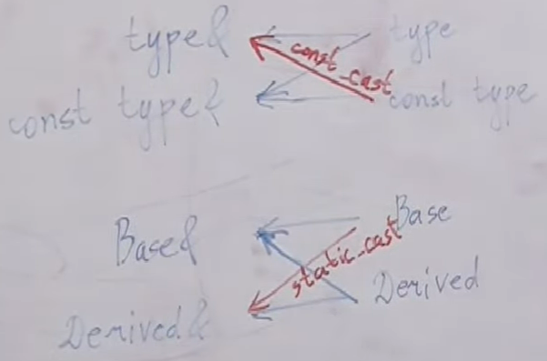 (тут на картинки не симметричные, но смысла не меняет)
type - тип, над которым определено больше операций, чем над const type. Если мы хотим const type принять по type ссылке (разрешить над ним операции, которые по умолчанию над ним запрещены), мы должны явно писать const_cast, но обратно работает неявно
аналогично, Derived - тип, над которым определено больше операций, чем над Base. если мы хотим Base принять по Derived ссылке (расширить круг операций), мы должны явно писать static_cast, но обратно тоже работает неявно
то есть сужать множество операций можно неявно, а расширять надо явно через каст
аналогично для видов value
std::move это в каком-то виде каст, но не между типами, а между value. над lvalue определены какие-то операции, а над rvalue определено больше операций. потому что над rvalue определена операция - забрать его данные и опустошить его, а самому себе присвоить то, что ему принадлежало
поэтому можно сказать, что std::move это и есть каст, расширяющий множество операций
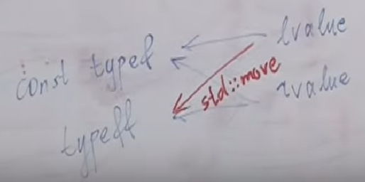
- вспомним свойста rvalue ссылок
int x = 5;
int&& y = std::move(x);
int&& z = std::move(y);
int t = 6;
z = t;
std::cout << x << y << z; // 666
по сути, имеем 3 имени для одной переменной x
rvalue ссылки так же умеют продлевать жизнь объектам
int&& r = 1;
создастся объект, к которому будет привязано имя r, также как
const int& r = 1;
но в старом случае его нельзя было менять, а сейчас можно
T&& -> T& кастится неявно
int x = 5;
int&& y = std::move(x); // OK
int& z = y; // OK
z = 6;
std::cout << x << y << z; // 666
Взаимодействие rvalue-ссылок и const
- правила константности действуют независимо от правил вида value
навешивать const можно, снимать только через const_cast
int x = 5;
const int&& y = std::move(x); // OK
int&& z1 = std::move(y); // CE
int&& z2 = std::move(const_cast<int&>(y)); // OK
int&& z3 = const_cast<int&&>(std::move(y)); // OK
z3 = 6;
std::cout << x << z2 << z3; // 666
const_cast для z2 нужен именно, чтобы убрать константность c const int&&, а дальше каст int&& -> int& сделается неявно
на самом деле const_cast можно делать даже без std::move
int x = 5;
const int&& y = std::move(x); // OK
int&& z = const_cast<int&&>(y); // OK
z = 6;
std::cout << x << z; // 66
- если бы в нашей реализации move с прошлой лекции, мы приняли
const T&
такое не работает
template <typename T>
T&& move(const T& x){
return static_cast<T&&>(x); // CE
}
нельзя с помощью static_cast скастовать от константного T к неконстантному
- рассмотрим такую функцию
template <typename U>
void f(const U& x){
g(std::move(x));
}
в move попадёт шаблонный тип T = const U из нашей функции f, поэтому из move мы вернем const U&&
если функция g определена двумя способами (пусть для строчек)
void g(const std::string& x) {/**/}
void g(std::string&& x) {/**/}
то мы попадём в первую версию const std::string&. мы не можем отдать константное rvalue, туда где ожидается неконстантное rvalue
const U&& - > const U& - OK
const U&& - > U&& - CE
поэтому, если мы мувнем константный тип, ничего плохого не случится!
мы всё равно попадём в копирующую версию (если представить что g это не функция, а конструктор). константность независимо от вида value защищает от изменений
template <typename T>
T&& move(T& x) {
return static_cast<T&&>(x);
}
void g(std::string&& x) {
std::cout << "std::string&&\n";
x = "cde"; // пытаемся испортить строку
}
void g(const std::string&) {
std::cout << "const std::string&\n";
}
template <typename U>
void f(const U& x){
g(move(x));
}
int main() {
std::string s = "abc";
f(s);
std::cout << s << "\n";
}
const std::string&
abc
Закрепим знания про rvalue-ссылки
T&&- это такой тип, который во всем аналогиченT&, кроме двух основных пунктов: инициализировать его можно только через rvalue, и если вернуть такой тип из функции, то это выражение будет считаться rvalue
обычная ссылка, просто инициализировали через rvalue
std::string x = "abc";
std::string&& y = std::move(x);
std::cout << x << " " << y << "\n"; // abc abc
но вот так
std::string x = "abc";
std::string y = std::move(x);
std::cout << x << " " << y << " " << y.empty() << "\n"; // abc 0
вызвался мув конструктор от строчки x, мы забрали её содержимое, поэтому она теперь пустая
Reference qualifiers
struct S {
std::string str;
std::string getData() const {
return str;
}
};
int main() {
S{"abc"}.getData();
}
здесь
- создастся строка str от "abc"
- в getData() из str создастся еще одна строка и вернется наружу
иногда хочется иначе работать с объектом, если *this это rvalue. хотим, чтобы при вызове метода у rvalue объекта, getData мувала бы строку, а не копировала её
у нас уже есть перегрузка между const и не const объектами. научимся ещё делать перегрузку между rvalue и lvalue объектами
- Reference qualifiers (C++11)
std::string getData() && {
return std::move(str);
}
теперь этот метод доступен только для rvalue объектов
мы хотим достать строку из временного объекта, который сейчас умрёт. поэтому мы возвращаем строку по значению, она будет создана мув конструктором из str. str станет пустой, но нам это и не важно, ведь весь объект S сейчас умрёт
- симметрично можно сделать только для lvalue объектов
std::string getData() & {
return str;
}
- но если написать вот так
std::string getData() const & {
return std::move(str);
}
аналогично константным ссылкам в параметрах. сможем вызываться, как от lvalue, так и от rvalue
мы как будто приняли себя по константной ссылке
- перегрузка, когда мы себя приняли по константной ссылке и по rvalue ссылке
struct S {
std::string str;
std::string getData() const & {
return str;
}
std::string getData() && {
return std::move(str);
}
};
в 1 случае себя менять нельзя (как будто по константной ссылке), во 2 случае можем из себя достать данные (как будто по rvalue ссылке)
S s = S{"abc"};
std::cout << s.getData() << "\n"; // abc
std::cout << std::move(s).getData() << "\n"; // abc
std::cout << s.getData() << "\n"; // пустая строка
1 и 3 строка - вызываемся от lvalue. во 2 строке вытащили строку str из объекта s
const S s = S{"abc"};
std::cout << s.getData() << "\n"; // abc
std::cout << std::move(s).getData() << "\n"; // abc
std::cout << s.getData() << "\n"; // abc
std::move(s) сделал каст const std::string& -> const std::string&&. как и обсуждали раньше, такое неявно скастится к const std::string& и вызовется первая версия
- если напишем так
struct S {
std::string str;
std::string getData() & {
return str;
}
std::string getData() && {
return std::move(str);
}
};
то 1 метод можно будет вызывать только от lvalue, но его нельзя будет вызывать от константых объектов
здесь будет аналогично
S s = S{"abc"};
std::cout << s.getData() << "\n"; // abc
std::cout << std::move(s).getData() << "\n"; // abc
std::cout << s.getData() << "\n"; // пустая строка
но вот здесь
const S s = S{"abc"};
std::cout << s.getData() << "\n"; // CE
std::cout << std::move(s).getData() << "\n"; // CE
но вот так всё ок - сбросили const, добавили &
const S s = S{"abc"};
std::cout << std::move(const_cast<S&>(s)).getData() << "\n"; // abc
- вывод: в операторе присваивания нужно писать &, чтобы к rvalue ничего нельзя было присвоить
Forwarding references
- вспомним проблему
push_back. у нас было 2 метода
void push_back(const T&) {/**/}
void push_back(T&&) {/**/}
они отличаются только одной строчкой
new(ptr) T(value);
new(ptr) T(std::move(value));
но это обман. ведь на самом деле там написано alloc.construct(...). как она выглядит? ответ
template <typename U, typename... Args>
void construct(U* ptr, const Args&... args) {
new (ptr) U(args...);
}
мы принимаем аргументы по константной ссылке. то есть мы не можем так мувать аргументы
но принять по rvalue ссылке Args&&... args мы не можем, т.к. тогда это не будет работать для lvalue
- такая же проблема c
emplace_back
template <typename... Args>
void emplace_back(const Args&... args) {
// ...
new(ptr) T(args...);
// ...
}
всё аналогично - аргументы будут копироваться
- в обоих функциях у нас переменное число аргументов. некоторые из них могут быть lvalue, а некоторые rvalue. т.е. нужно сделать $2^n$ перегрузок
мы научились копировать или мувать, пока это не передаётся дальше. но если нужно передать это в следующую функцию с сохранением вида value, мы не умеем такого
нам нужно уметь передавать аргументы дальше в функции с сохранением вида value - того, по которому мы их приняли на данный момент. если в emplace_back часть аргументов нам отдали как rvalue, а часть аргументов отдали как lvalue, мы должны и дальше в construct отдать соответствующие аргументы как rvalue, а другие как lvalue
- на самом деле сигнатура
emplace_backвсё таки выглядит так
template <typename... Args>
void emplace_back(Args&&... args) {/**/}
как же это работает?
- std::forward решает эту проблему
правильная передача аргументов с сохранением вида value в следующую функцию выглядит так
template <typename U, typename... Args>
void construct(U* ptr, Args&&... args) {
new (ptr) U(std::forward<Args>(args)...);
}
мы принимаем их вот по такой ссылке, но передаем дальше с помощью std::forward
функция std::forward в зависимости от того, приняли ли мы аргументы как lvalue или rvalue изначально, и дальше передает их как lvalue и rvalue соответственно
- но каким образом мы в
Args&&... argsпринимаем хоть какое-то lvalue? ведь это противоречит определению rvalue-ссылки
нужно ввести костыль. если вот такая ссылка является шаблонным параметром функции, то это правило неверно
Forwarding (universal) references
если такая ссылка T&& является типом аргумента функции, для которой тип T является шаблонным параметром, то не применяется правило, что её можно инициализировать только через rvalue
поэтому можно таким синтаксисом можно принимать как lvalue, так и rvalue
еще раз: если функция принимает тип вида T&& , где T - это шаблонный параметр данной функции, то такая ссылка работает по иным правилам, нежели обычная rvalue ссылка
- важно, чтобы тип был шаблонным параметром самой функции, а не вышележащего класса !!!
void push_back(T&&) {/**/}
вот это не попадает под исключение из правил, это шаблонный параметр класса!
- важно, чтобы тип был в точность равен типу шаблонного параметра +
&&
template <typename U, typename... Args>
void construct(U* ptr, const Args&&... args) {/**/}
тоже не попадает под исключение из правил, навесили const!
- если написано
std::vector<Args>&&, это тоже не попадает под исключение из правил
- упражнение
хотим написать конструктор от произвольного количества строк, причем строки могут быть как lvalue, так и rvalue
struct S {
std::vector<std::string> v;
template<typename... Args>
S(Args&&... args) {
static_assert((std::is_convertible_v<Args, std::string> && ...));
v.reserve(sizeof...(args));
(v.push_back(std::forward<Args>(args)), ...);
}
};
Правила вывода шаблонного типа для обычных и универсальных ссылок
рассмотрим вот такие функции
template<typename T>
void f(T x);
template<typename T>
void g(T& x);
template<typename T>
void h(T&& x);
для f и g всё очевидно, но для универсальных ссылок перестают работать правила вывода типа T
int x = 0;
f(x); // T = int
g(x); // T = int
h(x); // T = int&
int& y = x;
f(y); // T = int
g(y); // T = int
h(y); // T = int&
int&& z = std::move(x);
f(z); // T = int
g(z); // T = int
h(z); // T = int&
если функция принимает универсальную ссылку и мы вызываемся от lvalue, на T дополнительно навешивается &
но если вызываемся от rvalue
h(1); // T = int
h(std::move(x)); // T = int
правило: если мы вызываемся от lvalue, то T становится равным типу без ссылок с навешенным амперсандом, а если мы вызываемся от rvalue, то T выводится как обычно
это всё работает только для случая, когда мы явно не указали тип T
а какой тогда тип имеет сам объект x?
- reference collapsing rules
& + &->&&& + &->&& + &&->&&& + &&->&&
если в момент вывода типа переменной в шаблоне у нас накладываются амперсанды один на другой, то они преобразуются по такому правилу
для функции h:
- если мы передаем lvalue, то T = тип с &. на него навешивается еще &&, в итоге по правилу получается
T& - а если мы передаем rvalue, то T = просто тип. на него навесилось &&, получилось просто
T&&
с помощью этого костыля функции с универсальными ссылками могут принимать как lvalue, так и rvalue и различать эти виды value (подсказка насчёт того, как работает std::forward)
Лекция 41
повторим: если функция принимает тип вида T&& , где T - это шаблонный параметр данной функции, то есть всего 2 варианта:
- если мы передаем lvalue, то объект будет иметь тип
T& - если мы передаем rvalue, то объект будет иметь тип
T&&
Реализация std::move и std::forward
- сначала исправим код аллокатора с 36 лекции
template <typename U, typename... Args>
void construct(U* ptr, Args&&... args) {
new (ptr) U(std::forward<Args>(args)...);
}
заметим, что при вызове мы явно указываем тип шаблонного параметра Args, в forward правила вывода типа T работать не будут!
здесь args это lvalue независимо от того, передавали мы сюла lvalue или rvalue. но именно тип Args содержит информацию об исходном value category. если этот тип с одним амперсандом, то исходно в args попал lvalue. а если с двумя амперсандами, то исходно в args попал rvalue. и именно благодаря явной передаче этого типа в forward, он сможет определить, какой именно value category был изначально
- напишем реализацию std::forward
что нам нужно написать?
template <typename T>
? forward (? value) {
return ?;
}
хотим, чтобы если нам передами lvalue, то мы бы и дальше вернули lvalue. а если нам передами rvalue, то мы бы вернули rvalue (разделить эти 2 ветки)
Наивная попытка
template <typename T>
T&& forward(T&& value) {
return value;
}
рассмотрим случаи на примере int
- lvalue
Args = int&
typeof(args) = int& // reference collapsing в construct
T = int& // явно указали тип шаблонного параметра
typeof(value) = int& // reference collapsing в forward
int&&& forward(int&&& value) {
return value;
}
reference collapsing ->
int& forward(int& value) {
return value;
}
в construct попало lvalue, forward вызывается от lvalue, вернули lvalue - OK
- rvalue
Args = int
typeof(args) = int&& // reference collapsing в construct
T = int // явно указали тип шаблонного параметра
typeof(value) = int&&
int&& forward(int&& value) {
return value;
}
в construct попало rvalue, forward вызывается от lvalue (переменная int&& args - это уже lvalue!) и пытается проинициализировать rvalue ссылку через lvalue - CE
Вторая попытка
исправим проблему инициализации rvalue ссылки через lvalue
template <typename T>
T&& forward(T& value) {
return value;
}
но теперь здесь будет та же самая проблема, только при возврате
int&& forward(int& value) {
return value;
}
в construct попало rvalue, forward вызывается от lvalue (переменная int&& args - это уже lvalue!) и int& value нормально инициализируется
но на возврате из функции пытаемся проинициализировать rvalue ссылку int&& через int& - CE
- исправим и эту проблему, сделаем
static_cast
template <typename T>
T&& forward(T& value) {
return static_cast<T&&>(value);
}
но кажется, что этот forward ничем не отличается от move, который мы реализовывали на позапрошлой лекции :)
снова рассмотрим случаи
- lvalue
Args = int&
typeof(args) = int& // reference collapsing в construct
T = int& // явно указали тип шаблонного параметра
typeof(value) = int& // reference collapsing в forward
int&&& forward(int&& value) {
return static_cast<int&&&>(value);
}
reference collapsing ->
int& forward(int& value) { // здесь сработало & + & -> &
return static_cast<int&>(value);
}
в construct попало lvalue, forward вызывается от lvalue, вернули lvalue - OK
- rvalue
Args = int
typeof(args) = int&& // reference collapsing в construct
T = int // явно указали тип шаблонного параметра
typeof(value) = int&&
int&& forward(int& value) {
return static_cast<int&&>(value);
}
в construct попало rvalue, forward вызывается от lvalue (переменная int&& args - это уже lvalue!) и int& value нормально инициализируется, делаем static_cast, возвращаем rvalue - OK
таким образом этот код благодаря переданному типу T определяет value category исходного выражения (который был передан в construct)
на самом деле, тот move, который мы написали, это forward (хыхы пон)
Правильная реализация std::move
поймём, что наша старая реализация std::move не совсем правильная
moveне должен возвращать lvalue никогда!
как мы только что выяснили, в нашей старой реализации move возвращает lvalue, если ему в качестве T подсунуть одиночный амперсанд, а мы хотим чтобы move всегда возвращал тип с двумя амперсандами
поймём, что наша старая реализация
мы не хотим разделять value category исходного выражения (в отличии от forward не хотим разделять 2 ветки), мы хотим всегда вернуть rvalue
это произошло из-за правила reference collapsing, о котором мы раньше не знали. но мы не хотим, чтобы работало reference collapsing, когда мы возвращаем из move
std::remove_reference - снимает все амперсанды с типа
template <typename T>
std::remove_reference_t<T>&& move(T& value) {
return static_cast<std::remove_reference_t<T>&&>(value);
}
мы как бы отключили правило reference collapsing для возвращаемого типа (слили 2 ветки вместе) и теперь всегда возвращаем rvalue ссылку
- теперь поймём, что и принимаемый тип
moveне такой
template <typename T>
std::remove_reference_t<T>&& move(T&& value) {
return static_cast<std::remove_reference_t<T>&&>(value);
}
в move можно отдавать, как и lvalue, так и rvalue. и не важно, что мы дали - на выходе всё равно будет rvalue
пример - хотим передать в move результат какой-то функции, которая иногда возвращает lvalue, а иногда rvalue (в зависимости от T)
move(f<T>(x));
Правильная реализация std::forward
теперь поймём, что и наша реализация forward не совсем правильная
- хотим, чтобы
forwardне умел выводить тип шаблонного параметра неявно
на самом деле forward выглядит так
template <typename T>
T&& forward(std::remove_reference_t<T>& value) {
return static_cast<T&&>(value);
}
костыль такой - будем принимать не T&, а std::remove_reference_t<T>&
компилятор не умеет подбирать T, чтобы std::remove_reference_t<T> соответствовал нужному типу
если бы он умел выводить его неявно, то мы бы могли пользоваться forward неправильно. мы бы могли мувать, когда не надо
если оставить так
template <typename T>
T&& forward(T& value) {
return static_cast<T&&>(value);
}
мы бы могли написать вот так
std::forward(args);
тогда компилятор бы за нас вывел шаблонный аргумент, как T = тип без амперснадов. мы бы навесили на него два амперсанда, и получилось бы что forward мувает, хотя не должен
пример - вернемся опять к случаю с lvalue в construct
Args = int&
typeof(args) = int& // reference collapsing в construct
T = int // вывелось само!!! (и причем по старым правилам вывода)
typeof(value) = int&
int&& forward(int& value) {
return static_cast<int&&>(value);
}
forward возвращает назад rvalue, хотя изначально в construct передали lvalue. это неправильное поведение
поэтому принимаем std::remove_reference_t<T>
forwardот rvalue иногда тоже имеет смысл
в forward тоже можно отдавать, как и lvalue, так и rvalue
пример такой же - хотим форвардить не напрямую аргументы, а результат какой-то функции, которая иногда возвращает lvalue, а иногда rvalue (в зависимости от T)
template <typename T>
T&& forward(std::remove_reference_t<T>& value) {
return static_cast<T&&>(value);
}
void foo(const std::string&) {}
void foo(std::string&&) {}
struct Arg {
std::string s = "abc";
std::string& get() & { return s; }
std::string get() && { return s; }
};
template<class T>
void wrapper(T&& arg) {
using typeOfStr = decltype(::forward<T>(arg).get()); // выводим тип строчки (пока не знаем, что такое decltype)
foo(::forward<typeOfStr>(::forward<T>(arg).get()));
}
int main() {
Arg arg;
wrapper(arg); // OK
wrapper(Arg{}); // CE
}
пусть мы хотим вызвать метод объекта (и именно для его настоящего value catergory), а результат этого ещё раз зафорвардить. причем метод возвращает rvalue строку, если изначально объект был rvalue. и lvalue строку, если изначально объект был lvalue
тогда внешний вызов forward для rvalue даже не скомпилируется, наша версия принимает только lvalue
- поэтому на самом деле у
forwardесть перегрузка
здесь не получится сделать одну версию, как с move, потому что std::remove_reference_t<T>&& - не универсальная ссылка
нужно явно сделать вторую версию для rvalue
template <typename T>
T&& forward(std::remove_reference_t<T>& value) {
return static_cast<T&&>(value);
}
template <typename T>
T&& forward(std::remove_reference_t<T>&& value) {
static_assert(!std::is_lvalue_reference_v<T>);
return static_cast<T&&>(value);
}
вторая версия форвардит rvalue как rvalue и запрещает форвардить rvalue как lvalue
std::is_lvalue_reference - проверяет, что тип является обычной ссылкой (T&)
если не написать static_assert, то можно будет руками вызывать forward<int&>(5)
template <typename T>
T&& forward(std::remove_reference_t<T>&& value) {
return static_cast<T&&>(value);
}
T = int& // lvalue, заданный руками
int&&& forward(int&& value) {
return static_cast<int&&&>(value);
}
reference collapsing ->
int& forward(int&& value) {
return static_cast<int&>(value);
}
сфорвардили rvalue как lvalue
такое может привести к висящим ссылкам. например, если эту ссылку int& потом куда-то сохранить, а временный объект уничтожится. поэтому запрещаем такое в compile time
Итоговый код std::move и std::forward
template <typename T>
std::remove_reference_t<T>&& move(T&& value) noexcept {
return static_cast<std::remove_reference_t<T>&&>(value);
}
template <typename T>
T&& forward(std::remove_reference_t<T>& value) noexcept {
return static_cast<T&&>(value);
}
template <typename T>
T&& forward(std::remove_reference_t<T>&& value) noexcept {
static_assert(!std::is_lvalue_reference_v<T>);
return static_cast<T&&>(value);
}
навесили noexcept
Исправление push_back с учётом move семантики
исправим код вектора с 36 лекции
теперь мы можем написать так
void push_back(const T& value) {
if (sz_ == cap_) {
reserve(cap_ > 0 ? cap_ * 2 : 1);
}
AllocTraits::construct(alloc_, arr_ + sz_, value);
++sz_;
}
void push_back(T&& value) {
if (sz_ == cap_) {
reserve(cap_ > 0 ? cap_ * 2 : 1);
}
AllocTraits::construct(alloc_, arr_ + sz_, std::move(value));
++sz_;
}
для rvalue - просто муваем временный объект сразу в новую память. то, чего изначально и хотели
на самом деле обе функции push_back выражаются через emplace_back
void push_back(const T& value) {
emplace_back(value);
}
void push_back(T&& value) {
emplace_back(std::move(value));
}
template <typename... Args>
void emplace_back(Args&&... args) {
if (sz_ == cap_) {
reserve(cap_ > 0 ? cap_ * 2 : 1);
}
AllocTraits::construct(alloc_, arr_ + sz_, std::forward<Args>(args)...);
++sz_;
}
Проблема реаллокации
в методе reserve мы на новом массиве создаём объекты из старых массивов
for (; index < sz_; ++index) {
AllocTraits::construct(alloc_, newarr + index, arr_[index]);
}
сейчас это работает с копированием. для больших объектов это долго
применим std::move
for (; index < sz_; ++index) {
AllocTraits::construct(alloc_, newarr + index, std::move(arr_[index]));
}
но как быть в случае исключений? - пропало exception safety
мы начали мувать объекты и вылетело исключение
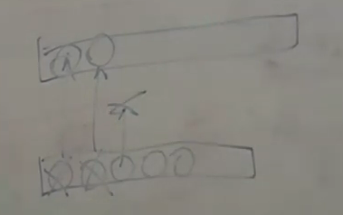
и мы не можем начать просто мувать обратно - вдруг снова вылетит исключение?
- std::move_if_noexcept - если move конструктор
noexceptона возвращает rvalue, иначе lvalue
если move конструктор noexcept, то спокойно муваем. иначе копируем
в таком случае действия в catch по прежнему верные (для мув версии просто здесь просто никогда не будет исключений)
try {
for (; index < sz_; ++index) {
AllocTraits::construct(alloc_, newarr + index, std::move_if_noexcept(arr_[index]));
}
} catch (...) {
for (size_t oldindex = 0; oldindex < index; ++oldindex) {
AllocTraits::destroy(alloc_, newarr + oldindex);
}
AllocTraits::deallocate(alloc_, newarr, newcap);
throw;
}
вывод: надо помечать move конструктор noexcept!
Реализация std::move_if_noexcept
std::is_nothrow_move_constructible - проверяет, является ли move конструктор noexcept
std::is_copy_constructible - является ли копируемым
template <typename T>
typename std::conditional_t<
!std::is_nothrow_move_constructible_v<T> || !std::is_copy_constructible_v<T>,
const T&,
T&&
> move_if_noexcept(T& value) noexcept {
return move(value);
}
зачем нужно второе условие?
допустим, что мы хотим сделать вектор из типов, которые нельзя копировать, но можно мувать. и при этом move конструктор не помечен noexcept
тогда вектор отказывается от exception safety. мы всё равно муваем этот тип, просто делаем это небезопасно
в move_if_noexcept не хотим отдавать rvalue, поэтому здесь принимаем просто T&
push_back в вектор элемента того же вектора
std::vector<std::string> v(5, "abc");
v.push_back(v[3]);
приняли объект по ссылке. и до того, как мы его куда-то положили мы сделали реаллокацию (вызвали деструкторы, освободили памяли) - получили битую ссылку
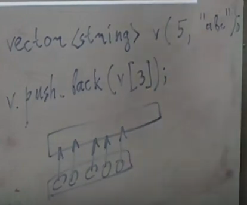
решение: сначала положим элемент в новую память, а только потом будем перекладывать старые. v[3] - lvalue. поэтому он просто скопируется
Переосмысление принятия параметров в функцию
почему бы нам не перестать принимать параметры по ссылке?
template <typename T>
void f(T x) {
//...
}
такое имеет смысл, если мы дальше будем куда-то сохранять или передавать x
если мы принимаем lvalue, то оно скопируется и мы его сможем менять. а если мы принимаем rvalue, то оно сразу мувнется на входе в функцию -> дальше можно всегда мувать этот объект
например так можно написать push_back
void push_back(T value) {
//...
}
если все объекты поддерживают move семантику, вместо 2 перегрузок можно написать 1 версию, а дальше всегда мувать этот объект value. проблема только, если объект не поддерживает move семантику
в stl push_back всё таки имеет 2 версии. это сделано для обратной совместимости. и потому что не все типы поддерживают move семантику
push_back не должен обязывать нас соблюдать move семантику. хотим уметь пользоваться им и по старинке
конечно, если мы не хотим никуда передавать или менять этот объект, всё это не имеет смысла
итоговый код аллокатора
итоговый код move и forward
итоговый код вектора